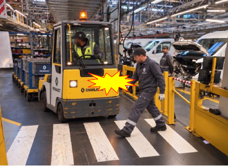
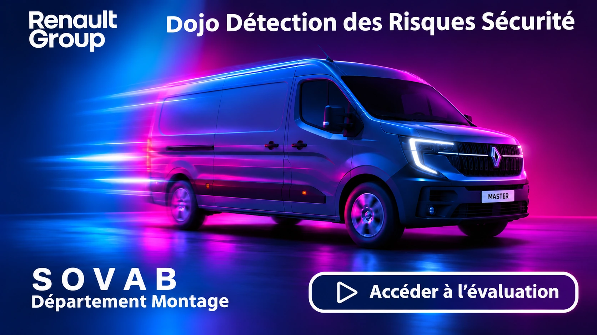
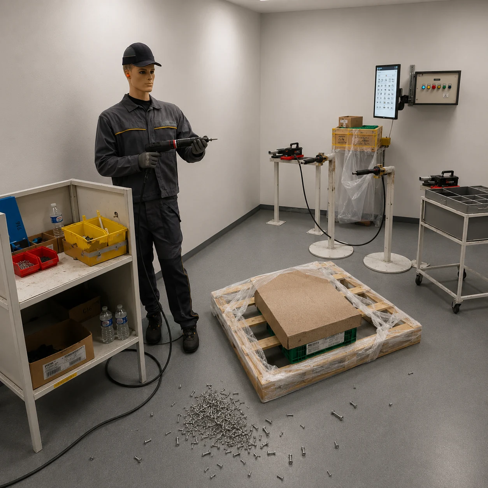

<!doctype html>
<html lang="fr">
<head>
  <meta charset="utf-8">
  <meta name="viewport" content="width=device-width, initial-scale=1, viewport-fit=cover">
  <meta name="theme-color" content="#0a376c">
  <meta name="description" content="Prototype interactif de détection des risques sécurité - parcours multi-zones sur tablette.">
  <link rel="manifest" href="./manifest.webmanifest">
  <link rel="icon" href="./icon.svg" type="image/svg+xml">
  <title>Dojo Détection des Risques Sécurité · V5.6</title>
  <style>
    :root{--navy:#08294f;--blue:#07549f;--bright:#0877d8;--pale:#edf4fb;--line:#d1dfed;--ink:#19324c;--muted:#667789;--green:#17834d;--red:#cc3340;--amber:#be7014;--white:#fff;--shadow:0 8px 26px rgba(5,39,78,.09)}
    /* Taille par défaut des pictogrammes : évite les SVG géants sans dimensions explicites. */
    svg{width:1em;height:1em;display:inline-block;vertical-align:-.14em;flex-shrink:0}
    .info-bar{display:flex;align-items:flex-start;gap:11px;line-height:1.55}
    .info-bar svg{width:21px;height:21px;flex:0 0 21px;margin-top:0}
    .panel h3 svg{width:22px;height:22px;vertical-align:-.22em}
    *{box-sizing:border-box}html{scroll-behavior:smooth}body{margin:0;background:#eef2f7;font-family:system-ui,-apple-system,"Segoe UI",Arial,sans-serif;color:var(--ink)}button{font:inherit;cursor:pointer}button:focus-visible,.stage:focus-visible{outline:3px solid #ffb42e;outline-offset:3px}button:disabled{opacity:.45;cursor:not-allowed}.app{max-width:1450px;margin:0 auto;min-height:100dvh;background:linear-gradient(140deg,#f3f7fb 0%,#fff 52%,#ecf3fa 100%);box-shadow:0 4px 40px #102d4411;position:relative;overflow:hidden}.app:before{content:"";position:absolute;top:70px;right:-100px;width:400px;height:230px;transform:skew(-34deg);background:linear-gradient(90deg,#dae4ef80,#f6faff00);pointer-events:none}
    .bar{height:80px;background:linear-gradient(108deg,#0a417c 0%,#0a417c 25%,#f1f5fa 25.1%,#f1f5fa 100%);display:flex;align-items:center;justify-content:space-between;padding:0 clamp(14px,3vw,38px);position:relative;z-index:1;gap:14px}.brand{display:flex;align-items:center;gap:15px;color:#fff;font-weight:730;line-height:1.1;font-size:15px}.brand svg{width:45px;height:45px;flex-shrink:0}.brand div{border-left:1px solid #c6e0ff;padding-left:13px}.lang-switch{display:flex;gap:7px;align-items:center;flex-wrap:wrap;justify-content:flex-end}.lang-switch button{border:1.5px solid #8aa9c9;background:#fff;color:var(--navy);border-radius:8px;min-width:48px;padding:9px 12px;font-weight:800;font-size:13px}.lang-switch button.active{background:#0a417c;color:#fff;border-color:#0a417c}.container{position:relative;z-index:1;padding:22px clamp(16px,3vw,46px) 36px}.hero{text-align:center;margin:0 auto 21px}.hero h1,.hero h2{color:var(--navy);font-weight:800;letter-spacing:-.025em;line-height:1.12;margin:6px 0 7px}.hero h1{font-size:clamp(27px,3.2vw,43px)}.hero h2{font-size:clamp(26px,3vw,40px)}.hero p{color:#687688;font-size:clamp(15px,1.7vw,20px);margin:6px 0}.accent{height:5px;width:76px;background:var(--bright);border-radius:999px;margin:14px auto 0}.hero-icon{display:inline-flex;align-items:center;gap:12px;justify-content:center}.hero-icon svg{height:42px;width:42px;color:#114878}.zone-cards{display:grid;grid-template-columns:repeat(3,minmax(0,1fr));gap:12px;margin-top:23px}.zone-card{border:1px solid #d8e5ef;border-radius:15px;overflow:hidden;background:white;box-shadow:var(--shadow);text-align:left;padding:0;display:flex;flex-direction:column;transition:transform .15s,box-shadow .15s}.zone-card:hover{transform:translateY(-2px);box-shadow:0 12px 30px #0e416322}.zone-disabled{opacity:.67;cursor:not-allowed!important}.zone-disabled:hover{transform:none;box-shadow:var(--shadow)}.zone-card img{width:100%;height:clamp(215px,33vw,385px);object-fit:cover;object-position:center;display:block}.zone-caption{background:linear-gradient(120deg,#184b7f,#0d3b6a);color:white;display:flex;align-items:center;gap:12px;padding:15px;min-height:78px;font-weight:780;font-size:clamp(14px,1.5vw,20px)}.zone-caption .glyph{width:36px;height:36px;flex-shrink:0}.zone-caption .arrow{margin-left:auto;font-size:29px;font-weight:500}.actions{display:flex;justify-content:center;align-items:center;gap:16px;flex-wrap:wrap;margin-top:23px}.btn{border-radius:11px;border:1.5px solid #0a4d91;padding:12px 20px;min-height:48px;display:inline-flex;justify-content:center;align-items:center;gap:10px;font-weight:750;line-height:1.2;color:#0a447b;background:#fff}.btn svg{width:19px;height:19px}.btn.primary{background:linear-gradient(180deg,#0c80e8,#07519a);border-color:#0455a0;color:white;box-shadow:0 3px 8px #0a538c21}.btn.primary:hover{filter:brightness(1.05)}.btn.minor{background:transparent;border-color:#afc9e0}.btn.pill{border-radius:999px}.btn.big{font-size:clamp(16px,1.8vw,21px);padding:15px 29px}.btn.dark{background:#143e69;color:#fff}.smallnote{color:var(--muted);font-size:12px;text-align:center;margin:17px auto;max-width:860px;line-height:1.5}.info-bar{padding:10px 14px;border:1px solid #bad2e8;border-radius:12px;background:#eff6fd;color:#315575;font-size:13px;margin-top:20px}.info-bar strong{color:#0b447b}
    .stage-grid{display:grid;grid-template-columns:minmax(0,1.8fr) minmax(240px,.8fr);gap:20px;align-items:start;margin-top:23px}.image-wrap{background:#fff;border:1px solid #c5d6e8;padding:8px;border-radius:16px;box-shadow:var(--shadow)}.stage{position:relative;line-height:0;user-select:none;touch-action:manipulation;overflow:hidden;border-radius:10px;background:#d8e0e8;width:100%}.stage.tap{cursor:crosshair}.stage img{width:100%;height:auto;display:block;pointer-events:none}.marker{position:absolute;display:grid;place-items:center;transform:translate(-50%,-50%);border-radius:50%;width:clamp(26px,3.6vw,42px);height:clamp(26px,3.6vw,42px);border:3px solid white;background:#076fc8;box-shadow:0 2px 11px #061b3888;color:#fff;font-size:15px;font-weight:800;line-height:1;z-index:2;padding:0}.marker.pick{cursor:pointer}.marker.good{background:var(--green)}.marker.missed{background:var(--red)}.marker.wrong{background:var(--amber)}.marker.hint{background:#e04c24}.marker.tiny{width:26px;height:26px;font-size:12px}.stage-caption{color:#678198;font-size:12px;line-height:1.4;padding:10px 3px 2px}.right-panel{display:flex;flex-direction:column;gap:11px}.status-card{border-radius:13px;background:linear-gradient(135deg,#07549d,#072f5c);color:#fff;padding:19px 20px;display:flex;flex-direction:column;gap:7px}.status-number{font-size:33px;font-weight:850}.status-card small{opacity:.85}.panel{padding:16px;border:1.5px solid #c1d7eb;border-radius:12px;background:#f6faff}.panel h3{color:var(--navy);font-size:19px;margin:0 0 10px}.panel p{font-size:15px;line-height:1.5;margin:6px 0;color:#3d5871}.stat-info{border:1px solid #bdd1e9;border-radius:11px;padding:13px 16px;background:#eaf2fa;font-weight:700;color:var(--navy)}.toolbar{display:flex;justify-content:space-between;gap:10px;align-items:center;flex-wrap:wrap;margin-top:14px}.toolbar .left,.toolbar .right{display:flex;gap:10px;flex-wrap:wrap}.label-muted{font-size:13px;color:var(--muted)}.pill-label{display:inline-block;border:1px solid #a8cce9;border-radius:999px;padding:5px 11px;background:#eff7ff;color:#184777;font-size:12px;font-weight:750}.progress{height:9px;border-radius:20px;background:#dce7f1;overflow:hidden;margin-top:10px}.progress>div{height:100%;background:linear-gradient(90deg,#0c78c6,#12b0d8);border-radius:20px;transition:width .2s}.helper{padding:12px 15px;background:#fff9eb;border:1px solid #f0d498;border-radius:10px;color:#79511a;font-size:13px;line-height:1.45}.scored{border-radius:999px;padding:8px 14px;font-weight:800;font-size:15px;white-space:nowrap;border:1px solid transparent}.scored.ok{background:#e7f6ee;color:#116d3c;border-color:#cde9d9}.scored.warn{background:#fff3d8;color:#986200;border-color:#efd297}.scored.bad{background:#fde6e8;color:#b12c38;border-color:#efc2c8}.score-banner{display:grid;grid-template-columns:repeat(3,1fr);background:linear-gradient(140deg,#084882,#0b3364);color:#fff;border-radius:14px;padding:22px 10px;margin-top:24px;gap:6px}.score-banner>div{display:flex;flex-direction:column;align-items:center;justify-content:center;text-align:center;gap:6px;border-right:1px solid #95b4d1}.score-banner>div:last-child{border:none}.score-banner strong{font-size:clamp(27px,4.5vw,50px)}.score-banner span{font-size:clamp(12px,1.4vw,16px);font-weight:650}.results-grid{display:grid;grid-template-columns:1.1fr 1fr;gap:18px;margin-top:18px}.result-rows{display:flex;flex-direction:column;gap:12px}.result-row{display:flex;gap:15px;border:1px solid #c2d6e7;border-radius:12px;background:#fff;padding:9px;align-items:center;text-align:left;width:100%}.result-row img{width:130px;height:92px;object-fit:cover;border-radius:8px}.result-row .name{flex:1;font-weight:800;color:var(--navy);font-size:17px}.result-row .name small{font-weight:500;display:block;color:#596e80;font-size:13px;margin-top:3px}.miss-list{margin:0;padding-left:20px;font-size:15px;line-height:1.5}.miss-list li{padding:8px 0;border-bottom:1px solid #e1e9f0}.miss-list li:last-child{border:none}.miss-list small{display:block;color:#647b90;font-size:12px;margin-top:2px}.review-title{font-size:20px;font-weight:800;color:var(--navy);margin:5px 0 14px}.review-list{display:grid;gap:10px;margin-top:13px}.review-item{border:1px solid #d9e3ed;border-radius:12px;padding:13px 15px;background:white;display:flex;gap:12px}.review-item .dot{border-radius:50%;width:25px;height:25px;flex-shrink:0;background:var(--red);color:white;display:grid;place-items:center;font-weight:800;font-size:13px}.review-item.found .dot{background:var(--green)}.review-item p{margin:3px 0;color:#516a80;font-size:13px;line-height:1.45}.review-item strong{font-size:14px}.back-home{margin-top:20px}.footer{position:relative;color:#8393a3;text-align:center;font-size:11px;padding:12px;border-top:1px solid #e5eef5}
    .modal{position:fixed;z-index:30;inset:0;background:#061528df;display:flex;flex-direction:column;padding:10px;gap:10px}.modal-top{color:white;display:flex;justify-content:space-between;align-items:center;gap:10px;flex-wrap:wrap;max-width:1400px;width:100%;margin:auto auto 0}.modal-top h3{margin:0;font-size:clamp(16px,2vw,22px)}.modal-actions{display:flex;gap:8px;align-items:center}.modal .btn{min-height:40px;padding:8px 11px}.zoom-viewport{flex:1;width:100%;max-width:1400px;margin:0 auto auto;overflow:auto;border:1px solid #456b90;border-radius:12px;background:#142d42;overscroll-behavior:contain;position:relative}.zoom-inner{width:100%;min-width:100%;min-height:100%;display:flex;align-items:center;justify-content:center}.zoom-inner .stage{flex-shrink:0;border-radius:0}.zoom-viewport .stage{max-width:none}.modal-note{color:#e8f4ff;font-size:13px;text-align:center;padding:0 5px 9px}.sr-only{position:absolute;height:1px;width:1px;clip:rect(0 0 0 0);overflow:hidden;white-space:nowrap}
    @media(max-width:900px){.bar{height:auto;min-height:67px;padding:10px 15px}.brand{font-size:12px;gap:8px}.brand svg{width:34px;height:34px}.brand div{padding-left:9px}.container{padding:18px 16px 30px}.zone-card img{height:clamp(150px,24vw,260px)}.zone-caption{font-size:14px;min-height:75px;padding:10px;gap:6px}.zone-caption .glyph{width:23px;height:23px}.stage-grid{grid-template-columns:minmax(0,1.5fr) minmax(200px,.8fr);gap:12px}.status-card{padding:14px}.results-grid{gap:10px}.result-row img{width:90px;height:74px}}
    @media(max-width:700px){.bar{background:linear-gradient(105deg,#0a417c 0%,#0a417c 45%,#f1f5fa 45.1%,#f1f5fa 100%)}.lang-switch{gap:4px}.lang-switch button{min-width:36px;padding:7px 7px;font-size:11px}.hero-icon svg{display:none}.zone-cards{grid-template-columns:1fr}.zone-card img{height:175px;object-position:center 42%}.zone-caption{min-height:53px}.stage-grid,.results-grid{grid-template-columns:1fr}.right-panel{display:grid;grid-template-columns:1fr 1fr;align-items:start}.panel{padding:13px}.status-number{font-size:25px}.toolbar{gap:8px}.toolbar .left,.toolbar .right{width:100%;justify-content:space-between}.toolbar .btn{flex:1}.score-banner{padding:13px 5px}.result-row img{width:100px;height:74px}.modal-top{align-items:flex-start}.modal-actions{width:100%}.modal-actions .btn{flex:1}.zoom-inner{align-items:flex-start;justify-content:flex-start}.hero h1{font-size:27px}}
    @media(max-width:400px){.brand{font-size:10px}.brand svg{width:27px;height:27px}.lang-switch button{min-width:33px;padding:5px}.container{padding:13px 11px 22px}.right-panel{grid-template-columns:1fr}.btn{font-size:13px;padding:9px}.result-row .name{font-size:14px}.result-row img{width:76px;height:64px}}
    @media(min-width:1000px) and (max-height:780px){.container{padding-top:12px}.hero{margin-bottom:9px}.hero h1{font-size:30px;margin:2px 0}.hero p{font-size:16px}.accent{margin:7px auto 0}.zone-cards{margin-top:14px}.zone-card img{height:min(39vh,320px)}.actions{margin-top:16px}.stage-grid{margin-top:12px}}
  
/* V4.1 — Tolérance de détection inchangée, surfaces invisibles dans le corrigé.
   Repères compacts : vert=trouvé, rouge=oublié, orangé=hors anomalie. */
.marker.repeat{background:#617d91}
.stage .marker{z-index:3}
.stage .marker.good,.stage .marker.missed,.stage .marker.wrong,.stage .marker.repeat{
 width:clamp(25px,2.5vw,32px);height:clamp(25px,2.5vw,32px);
 border:2px solid #fff;box-shadow:0 1px 5px rgba(0,0,0,.22);font-size:14px
}
.stage .marker.tiny{width:25px;height:25px;font-size:12px}
/* Casquette et oreille : les petits repères ne masquent pas les zones proches. */
.stage[data-stage="2"].tap .marker.pick{pointer-events:none}

    /* V4.6 : parcours continu, accès direct aux trois zones sans exposer les réponses. */
    .zone-nav{display:flex;justify-content:center;gap:10px;margin:4px 0 14px;flex-wrap:wrap}
    .zone-step{display:flex;align-items:center;gap:8px;border:1.5px solid #adc9e0;background:#fff;color:#174976;border-radius:12px;padding:9px 15px;min-height:46px;font-weight:750;box-shadow:0 2px 5px #14334c0b}
    .zone-step.current{background:#0a417c;border-color:#0a417c;color:#fff}
    .step-number{display:inline-flex;align-items:center;justify-content:center;width:25px;height:25px;border-radius:50%;background:#eaf2f9;color:#164e7e;font-weight:850}
    .zone-step.current .step-number{background:#fff;color:#0a417c}
    .step-done{font-size:15px;color:#18804e}.zone-step.current .step-done{color:#b8f0d3}
    .finish-note{border:1px solid #d6b56f;background:#fff8e8;border-radius:10px;color:#704b0e;margin-top:12px;padding:9px 12px;font-size:13px}
    @media(max-width:700px){.zone-nav{gap:6px}.zone-step{padding:8px 10px;min-height:44px;font-size:12px;gap:5px}.step-number{width:22px;height:22px}}

    /* V4.7 : identification et historique local pour démonstration, sans serveur */
    .identity-card,.history-card{max-width:960px;margin:18px auto;background:#fff;border:1px solid #ccdfeb;border-radius:18px;box-shadow:var(--shadow);padding:clamp(16px,3vw,30px)}
    .identity-head{display:flex;align-items:center;justify-content:space-between;gap:10px;flex-wrap:wrap;margin-bottom:15px}
    .identity-head h3{margin:0;color:var(--navy);font-size:21px}
    .form-grid{display:grid;grid-template-columns:repeat(2,minmax(0,1fr));gap:17px 18px}
    .field{display:flex;flex-direction:column;gap:6px;min-width:0}.field label{font-size:15px;font-weight:750;color:#294963}.field input{width:100%;padding:13px 14px;min-height:49px;border-radius:10px;border:1.5px solid #aac3d8;font:inherit;font-size:16px;color:#172c3e;background:white}.field input:focus{outline:3px solid #9bd0ff;outline-offset:1px;border-color:#0e75bd}.field small,.data-note{font-size:13px;color:#526e86;line-height:1.5}
    .identity-foot{display:flex;flex-wrap:wrap;justify-content:space-between;align-items:center;gap:10px;margin-top:20px}.identity-foot .btn{min-width:180px}
    .identity-sample{color:#1f6696;background:#e9f5ff;border:1px solid #b5d7ec;padding:9px 11px;border-radius:10px;font-size:13px}
    .record-strip{border:1px solid #c8dce8;background:#eef6fc;border-radius:12px;margin:15px auto 0;padding:13px 16px;max-width:1040px;display:flex;gap:14px;align-items:center;justify-content:space-between;flex-wrap:wrap;font-size:14px}
    .record-strip strong{color:var(--navy)}.record-strip small{color:#506c81}
    .history-table-wrap{overflow-x:auto;max-width:100%;border:1px solid #d6e2ed;border-radius:12px;background:white;margin-top:14px}
    .history-table{width:100%;border-collapse:collapse;min-width:680px;font-size:14px}.history-table th{background:#e8f1fa;text-align:left;color:#204564;font-size:13px}.history-table th,.history-table td{padding:13px 11px;border-bottom:1px solid #dfebf3;vertical-align:top}.history-table tr:last-child td{border:0}.history-table td strong{color:var(--navy)}
    .history-controls{display:flex;gap:10px;align-items:center;justify-content:space-between;flex-wrap:wrap}.history-empty{text-align:center;padding:30px 15px;color:#607f94}
    .local-message{border:1px solid #b6dbc8;background:#edf8f2;color:#145d3b;padding:10px 13px;border-radius:10px;font-size:13px;margin-top:12px}
    .local-message.warning{border-color:#e2c28e;background:#fff6e6;color:#76521b}
    @media(max-width:640px){.form-grid{grid-template-columns:1fr}.identity-foot .btn{flex:1}.record-strip{gap:8px}.history-controls .btn{font-size:13px}}

    /* V4.8 : historique visuel et fiche imprimable. Les surfaces de détection ne changent pas. */
    .history-table button.open-record{font-size:13px;color:#07549f;font-weight:800;border:1px solid #9bc2e5;background:white;border-radius:8px;padding:9px;min-height:40px;white-space:nowrap}
    .archive-summary{background:#f0f6fd;border:1px solid #c5dcf0;border-radius:14px;padding:17px;display:flex;gap:15px;align-items:center;justify-content:space-between;flex-wrap:wrap;margin:10px 0 15px}
    .archive-summary h3{margin:0 0 5px;color:#08294f;font-size:20px}.archive-summary p{margin:3px 0;color:#4e657c;font-size:13px}
    .archive-score{background:#083b73;color:#fff;border-radius:12px;text-align:center;padding:10px 24px;min-width:135px}
    .archive-score strong{display:block;font-size:29px}.archive-score small{font-size:12px}
    .archive-zone{background:#fff;border:1px solid #c5d6e8;border-radius:13px;overflow:hidden;margin:18px 0;box-shadow:var(--shadow)}
    .archive-zone-head{display:flex;justify-content:space-between;gap:10px;align-items:center;padding:13px 16px;background:#eaf2fb;color:#092f58}
    .archive-zone-head h3{margin:0;font-size:18px}.archive-zone-head strong{white-space:nowrap;font-size:20px}
    .archive-zone-inner{display:grid;grid-template-columns:minmax(0,1fr) minmax(200px,.7fr);gap:15px;padding:13px}
    .archive-stage{position:relative;line-height:0;overflow:hidden;background:#dae4ec;border-radius:10px;align-self:start}
    .archive-stage img{display:block;width:100%;height:auto}
    .archive-stage .arch-marker{position:absolute;transform:translate(-50%,-50%);display:grid;place-items:center;background:#17834d;border:2px solid white;color:#fff;border-radius:50%;width:29px;height:29px;font-size:16px;font-weight:900;line-height:1;box-shadow:0 1px 5px #041b2e8a;z-index:1}
    .archive-stage .arch-marker.miss{background:#cc3340}.archive-stage .arch-marker.bad{background:#be7014}
    .archive-risk{border:1px solid #dae4ed;border-radius:9px;padding:9px 11px;margin-bottom:8px;background:#fff;display:flex;align-items:flex-start;gap:9px;line-height:1.3}
    .archive-risk .riskmark{background:#17834d;border-radius:50%;color:#fff;width:23px;height:23px;display:grid;place-items:center;flex:none;font-size:13px;font-weight:800}
    .archive-risk.miss .riskmark{background:#cc3340}
    .archive-risk b{font-size:13px;color:#143757}.archive-risk p{font-size:12px;color:#657587;margin:4px 0 0;line-height:1.45}
    .archive-legend{font-size:12px;color:#516a80;margin:8px 2px;line-height:1.5}
    .archive-actions{display:flex;align-items:center;gap:10px;flex-wrap:wrap;margin:15px 0}
    .print-report{display:none}
    @media(max-width:720px){.archive-zone-inner{grid-template-columns:1fr}.archive-summary{align-items:stretch}.archive-score{flex:1}.history-table button.open-record{font-size:12px;padding:8px}}
    @page{size:A4 portrait;margin:10mm}
    @media print{
      html,body{background:white!important;margin:0!important;padding:0!important;-webkit-print-color-adjust:exact;print-color-adjust:exact}
      body>.app,#app,.modal{display:none!important}
      .print-report{display:block!important;color:#16334b;font-family:Arial,sans-serif;font-size:10pt;line-height:1.3;background:#fff!important}
      .print-report,.print-report *{background-image:none!important}
      .print-page{page-break-after:always;break-after:page;min-height:250mm;box-sizing:border-box;background:#fff!important;padding:0;margin:0}
      .print-page:last-child{page-break-after:auto;break-after:auto}
      .print-head{display:flex;align-items:flex-end;justify-content:space-between;border-bottom:3px solid #0a417c;padding-bottom:5mm;margin-bottom:5mm;color:#0a376c}
      .print-head h1{font-size:17pt;line-height:1.15;margin:0}.print-head p{font-size:9pt;color:#526a7e;margin:3px 0 0}
      .print-pill{background:#0a417c;color:white;padding:2mm 4mm;border-radius:2mm;font-weight:bold}
      .print-profile{background:#edf4fa;border:1px solid #b8d1e5;border-radius:2mm;padding:4mm 5mm;margin-bottom:4mm;font-size:10pt}
      .print-profile b{font-size:12pt}.print-scores{display:flex;gap:3mm;margin:4mm 0}
      .print-scores>div{flex:1;text-align:center;background:#0a417c;color:#fff;border-radius:2mm;padding:2mm 1mm}
      .print-scores strong{font-size:16pt}.print-scores span{display:block;font-size:8pt}
      .print-zone-title{display:flex;justify-content:space-between;align-items:center;color:#0a376c;margin:3mm 0}
      .print-zone-title h2{margin:0;font-size:14pt}
      .print-photo{width:126mm;margin:0 auto 3mm;position:relative;line-height:0}
      .print-photo img{width:100%;display:block;height:auto}
      .print-photo .arch-marker{position:absolute;transform:translate(-50%,-50%);display:grid;place-items:center;background:#17834d;border:1px solid white;color:#fff;border-radius:50%;width:5.4mm;height:5.4mm;font-size:9pt;font-weight:900;line-height:1}
      .print-photo .arch-marker.miss{background:#cc3340}.print-photo .arch-marker.bad{background:#be7014}
      .print-legend{font-size:8pt;text-align:center;color:#425e75;margin:2mm 0 3mm}
      .print-riskgrid{display:grid;grid-template-columns:1fr 1fr;gap:2mm 4mm}
      .print-risk{border-bottom:1px solid #dae2e9;padding:1mm;display:flex;gap:2mm;font-size:8.3pt;line-height:1.25;break-inside:avoid}
      .print-risk .signal{color:#fff;background:#17834d;border-radius:50%;width:4mm;height:4mm;flex:none;text-align:center;font-size:8pt;font-weight:bold}
      .print-risk.miss .signal{background:#cc3340}.print-risk small{display:block;color:#566b80;font-size:7.1pt;margin-top:1mm}
      .print-foot{font-size:7.5pt;color:#6b7b89;margin-top:4mm;border-top:1px solid #b9cad8;padding-top:2mm}
    }

/* Extension facultative V4.8 : RETEX HSE fictif, affiché UNIQUEMENT APRÈS l’évaluation. */
.rex-alert{display:flex;align-items:center;justify-content:space-between;flex-wrap:wrap;gap:14px;margin:18px 0 6px;padding:17px 19px;background:#edf5fc;border:1.5px solid #a9cbe3;border-left:5px solid #0a65a3;border-radius:13px;line-height:1.48}
.rex-alert.missed{background:#fff5ed;border-color:#dfb49d;border-left-color:#af4e24}
.rex-alert h3{font-size:17px;color:#163e63;margin:0 0 5px}.rex-alert.missed h3{color:#903c1c}.rex-alert p{margin:4px 0;color:#40596c;font-size:14px}.rex-alert .btn{flex-shrink:0}
.rex-chip{font-size:11px;letter-spacing:.03em;text-transform:uppercase;font-weight:850;color:#795018;display:inline-block;margin-bottom:5px}
.rex-mini{display:flex;align-items:center;justify-content:space-between;gap:10px;border:1px solid #b7d2e4;background:#eff6fc;padding:12px 14px;margin:12px 0;border-radius:11px;flex-wrap:wrap}.rex-mini strong{display:block;color:#173b62}.rex-mini small{display:block;color:#64788b;margin-top:3px}
.rex-mini.missed{border-color:#e1b9a0;background:#fff7ed}
.rex-link{font-size:13px;padding:8px 12px;border:1px solid #a5c5dd;background:#f7fbff;border-radius:8px;color:#0b5387;font-weight:750;min-height:38px;cursor:pointer}
.rex-overlay{position:fixed;inset:0;z-index:80;background:rgba(8,22,42,.78);padding:16px;display:flex;justify-content:center;align-items:center;overflow-y:auto}
.rex-sheet{width:min(760px,100%);max-height:calc(100dvh - 32px);overflow:auto;background:white;border-radius:18px;padding:clamp(17px,3vw,29px);box-shadow:0 18px 70px #0007;line-height:1.52}
.rex-top{display:flex;justify-content:space-between;align-items:flex-start;gap:14px}.rex-top h2{margin:3px 0 8px;color:#0b3766;font-size:clamp(22px,2.8vw,29px)}
.rex-fictif{background:#fff2d7;border:1px solid #ebc87b;color:#68430b;padding:10px 12px;border-radius:9px;font-size:13px;font-weight:700;margin:12px 0}
.rex-main{display:grid;grid-template-columns:minmax(190px,42%) 1fr;gap:16px;align-items:start;margin-top:15px}
.rex-photo-wrap{width:100%;position:relative;line-height:0}.rex-photo{border-radius:10px;width:100%;display:block;border:1px solid #cad7e2}.rex-focus{position:absolute;left:43.3%;top:28.3%;transform:translate(-50%,-50%);border:2px solid #fff;background:#c73842;color:white;border-radius:50%;width:25px;height:25px;display:flex;align-items:center;justify-content:center;font-size:18px;font-weight:900;line-height:1;box-shadow:0 2px 7px #0007;pointer-events:none}
.rex-sheet h3{font-size:15px;color:#174977;margin:9px 0 2px}.rex-sheet p{font-size:14px;margin:0 0 9px}.rex-fields{border-top:1px solid #dae6ef;margin-top:14px;padding-top:10px}
.rex-status{font-size:13px;font-weight:800;color:#17693e}.rex-status.missed{color:#9b3e20}
.rex-footnote{font-size:12px;color:#556c80;background:#f1f6fa;border-radius:8px;padding:10px;margin-top:12px}
@media(max-width:600px){.rex-main{grid-template-columns:1fr}.rex-photo{max-height:170px;object-fit:cover;object-position:50% 78%}.rex-alert{align-items:stretch}.rex-alert .btn{width:100%}}
@media print{.rex-overlay{display:none!important}.print-rex{padding-top:1mm}.print-rex h2{color:#0a376c;font-size:16pt;margin:0 0 5mm}.print-rex h3{font-size:10.5pt;color:#174977;margin:2.2mm 0 1mm}.print-rex p{font-size:9.5pt;margin:0 0 2mm}.print-rex .rex-fictif{font-size:10pt}.rex-print-image{width:99mm;max-width:100%;position:relative;margin:2.5mm auto}.rex-print-image img{width:100%;display:block;margin:0}.rex-print-image .rex-focus{width:5.5mm;height:5.5mm;font-size:11pt;box-shadow:none;border:1px solid white}}


/* Repère accident : le point reste rouge, un pictogramme ambre signale la fiche disponible. */
.stage .marker.rex-missed,.archive-stage .arch-marker.rex-missed{
  cursor:pointer;z-index:10;overflow:visible;touch-action:manipulation;
  transition:box-shadow .15s ease,filter .15s ease;
}
.stage .marker.rex-missed:hover,.archive-stage .arch-marker.rex-missed:hover{
  box-shadow:0 0 0 3px rgba(255,188,52,.45),0 1px 5px rgba(0,0,0,.24);
}
.stage .marker.rex-missed:focus-visible,.archive-stage .arch-marker.rex-missed:focus-visible{
  outline:3px solid #e3a11c;outline-offset:3px;
}
.rex-marker-flag{
  position:absolute;right:-12px;top:-11px;display:grid;place-items:center;
  width:19px;height:19px;padding:0;border-radius:5px;
  background:#ffdf80;border:1.5px solid #fff;color:#653c00;
  font:800 13px/1 system-ui,sans-serif;box-shadow:0 1px 4px #162f4a66;
  pointer-events:none;
}
.stage .marker.tiny.rex-missed .rex-marker-flag{width:17px;height:17px;right:-10px;top:-10px;font-size:11px}
.rex-point-guide{display:flex;align-items:center;gap:7px;flex-wrap:wrap;
  margin:7px 0 0;padding:7px 10px;border:1px solid #f0d69b;border-radius:9px;
  background:#fff9ed;color:#684318;font-size:12px;line-height:1.35;
}
.rex-guide-alert{font-size:15px;line-height:1}
@media (max-width:640px){.rex-point-guide{font-size:11px}}

/* V4.9 TEST : validation de fin de formation après correction */
.signature-prompt{display:flex;align-items:center;justify-content:space-between;gap:18px;flex-wrap:wrap;background:linear-gradient(115deg,#e9f5ed,#f4faff);border:1.5px solid #b8d9c6;border-left:5px solid #159253;border-radius:14px;padding:17px 19px;margin:22px 0}
.signature-prompt strong{color:#123c62;font-size:18px}.signature-prompt p{margin:5px 0 0;color:#49647a;font-size:14px}.signature-prompt .btn:disabled{opacity:.5;cursor:not-allowed}
.signature-layout{display:grid;grid-template-columns:1fr 1.08fr;gap:20px;margin:20px 0}.signature-panel{border:1px solid #c5d8e8;border-radius:15px;background:#fff;padding:20px;box-shadow:var(--shadow)}
.signature-panel h3{color:#0c3763;margin:0 0 14px}.sig-summary-row{display:flex;justify-content:space-between;gap:12px;padding:12px 7px;border-bottom:1px solid #e4ecf4}.sig-summary-row span{color:#49647a}.sig-summary-row b{text-align:right;color:#102b49}
.sig-attest{background:#e7f7ec;border:1px solid #b8dec7;border-radius:12px;padding:16px 18px;font-weight:750;font-size:17px;line-height:1.5;margin:0 0 15px}
.sig-pad{display:block;width:100%;height:210px;touch-action:none;user-select:none;background:#fff;border:2px solid #a8bdd0;border-radius:12px;cursor:crosshair}
.sig-label{color:#46617b;font-weight:800;font-size:14px;margin:13px 0 9px}.sig-help{font-size:13px;color:#60798c;margin:9px 0 0}.sig-buttons{display:flex;justify-content:flex-end;flex-wrap:wrap;gap:12px;margin-top:18px}.sig-draft-label{color:#7d4110;font-weight:750;font-size:12px;margin-top:10px}
.sig-record{margin:20px 0;border:1px solid #b8d9c6;background:#f6fbf7;padding:18px;border-radius:13px}.sig-record h3{margin:0 0 8px;color:#0c3763}.sig-record img{display:block;max-width:480px;width:100%;height:145px;object-fit:contain;background:white;border:1px solid #c9d8e4;border-radius:10px;margin-top:12px}.sig-record p{font-size:14px;color:#435e72}
.print-signature{border:2px solid #a2bbc9;border-radius:3mm;width:155mm;max-width:100%;height:40mm;object-fit:contain;display:block;margin:6mm auto 5mm}
@media(max-width:760px){.signature-layout{grid-template-columns:1fr}.signature-panel{padding:14px}.sig-pad{height:190px}.signature-prompt .btn{width:100%}}

/* V5 : page d'accueil fidèle au visuel validé, sans altérer le parcours V4.9 */
.welcome-screen{height:100dvh;min-height:360px;width:100%;background:#041333;display:flex;align-items:center;justify-content:center;overflow:hidden}
.welcome-frame{width:min(100vw,calc(100dvh * 1672 / 941));aspect-ratio:1672 / 941;max-height:100dvh;position:relative;flex-shrink:0}
.welcome-art{height:100%;width:100%;display:block;object-fit:contain;user-select:none;-webkit-user-drag:none;pointer-events:none}
.welcome-entry{position:absolute;left:51.4%;top:80%;width:45.4%;height:12.5%;background:transparent;border:0;border-radius:999px;cursor:pointer;touch-action:manipulation;-webkit-tap-highlight-color:transparent}
.welcome-entry:focus-visible{outline:4px solid #ffffff;outline-offset:4px;box-shadow:0 0 0 8px #126cd8}
@media(orientation:portrait){.welcome-screen{height:100dvh}.welcome-frame{width:100vw}.welcome-entry{min-height:35px}}

/* V5.1 : écran d'identification Renault Group, épuré et adapté aux tablettes. */
.identify-screen{min-height:100dvh;background:#071643 url('fond-pages.webp') center center/cover no-repeat;display:flex;flex-direction:column;align-items:center;padding:clamp(92px,12vh,140px) 18px 32px;position:relative;color:#071c42}
.identify-language{position:absolute;right:clamp(12px,2.4vw,40px);top:clamp(16px,3vh,30px);display:flex;gap:7px;direction:ltr;z-index:2}
.identify-language button{min-width:51px;min-height:41px;border:1px solid #cfdbea;border-radius:9px;background:white;color:#10264e;font-weight:800;font-size:13px;cursor:pointer}
.identify-language button.active{background:#062b64;color:#fff;border-color:#062b64}
.identify-panel{width:min(1100px,100%);border-radius:26px;background:#fff;box-shadow:0 14px 38px rgba(0,13,40,.31);padding:clamp(19px,3.4vw,39px) clamp(19px,3.6vw,42px);margin:auto 0}
.identify-heading{text-align:center;margin:0 0 22px}
.identify-heading h1{font-size:clamp(24px,3.3vw,39px);letter-spacing:-.6px;line-height:1.13;color:#09244b;margin:0}
.identify-heading p{font-size:clamp(15px,1.8vw,20px);color:#344c6d;margin:12px 0 14px}
.identify-accent{height:5px;width:96px;background:#0969df;border-radius:10px;margin:0 auto}
.identify-panel .identity-card{padding:0;margin:0;max-width:none;box-shadow:none;border:0;border-top:1px solid #e3e9f3;border-radius:0;background:transparent;padding-top:19px}
.identify-panel .identity-head h3{color:#09244b}
.identify-panel .field label{color:#132746}
.identify-panel .field input{border:1.5px solid #abbacf;background:white;color:#0e2445;box-shadow:none}
.identify-panel .field input:focus{outline:3px solid #a5d3ff}
.identify-panel .identity-foot{margin-top:26px}
.identify-panel .identity-foot .btn{border:1.7px solid #152f62;background:white;color:#0a2855;box-shadow:none;min-height:52px}
.identify-panel .identity-foot .btn.primary{background:#092b66;border-color:#092b66;color:#fff;box-shadow:none}
.identify-panel .identity-foot .btn:focus-visible,.identify-language button:focus-visible{outline:3px solid #33bdf8;outline-offset:3px}
.identify-footnote{color:white;text-shadow:0 1px 4px #002;text-align:center;margin:15px 0 0;font-size:12px;max-width:900px}
@media(max-width:650px){.identify-screen{padding:95px 12px 20px;background-position:35% center}.identify-panel{border-radius:18px;padding:19px 15px}.identify-panel .form-grid{grid-template-columns:1fr;gap:12px}.identify-panel .identity-foot{gap:12px}.identify-panel .identity-foot .btn{flex:1 1 100%}.identify-language button{min-width:42px}}
@media(max-height:670px) and (min-width:651px){.identify-screen{padding-top:76px}.identify-panel{padding-top:17px;padding-bottom:17px}.identify-heading{margin-bottom:12px}.identify-panel .form-grid{gap:10px 15px}.identify-panel .field input{min-height:42px;padding:8px 12px}.identify-panel .identity-foot{margin-top:12px}}

/* V5.4 — Identité visuelle inspirée du nouvel accueil bleu / mauve.
   La photographie du Master reste uniquement sur l'accueil, afin de ne pas
   gêner les zones cliquables, les fiches, les résultats et la signature. */
body{background:#07113a}
.app{max-width:none;background:#07113a url('fond-pages.webp') center center/cover fixed no-repeat;min-height:100dvh;box-shadow:none}
.app:before{display:none}
.app .bar{background:rgba(6,20,63,.84);border-bottom:1px solid rgba(255,255,255,.15);backdrop-filter:blur(8px)}
.app .brand{color:white}
.app .lang-switch button{background:#fff;border-color:#e6e9f6;color:#182854}
.app .lang-switch button.active{background:#233e8b;border-color:#879ffc;color:white}
.app .container{width:calc(100% - clamp(20px,3vw,56px));max-width:1420px;margin:clamp(12px,2vw,24px) auto;border-radius:22px;padding:clamp(15px,2.5vw,32px);background:rgba(249,251,255,.94);box-shadow:0 18px 50px rgba(0,8,48,.20)}
.app .footer{color:#fff;border-top-color:rgba(255,255,255,.18);text-shadow:0 1px 3px #091435}
.app .btn.primary{background:#122e73;border-color:#122e73;color:white}
.app .status-card,.app .score-banner{background:linear-gradient(125deg,#102e7f,#452779)}
.app .zone-caption{background:linear-gradient(125deg,#173879,#4e267e)}
.app .zone-step.current{background:#342a80;border-color:#342a80}
.app .accent,.app .progress>div{background:linear-gradient(90deg,#197afe,#bb3de0)}
.identify-screen{background-position:center center}
.identify-renault{position:absolute;top:clamp(16px,3vw,36px);left:clamp(18px,4vw,64px);font-size:clamp(23px,3vw,41px);font-weight:850;line-height:.86;letter-spacing:-.05em;color:white;text-shadow:0 2px 5px #10153c;z-index:1}
.identify-panel{background:rgba(255,255,255,.975)}
.identify-panel .identity-foot .btn.primary{background:#152e72;border-color:#152e72;color:white}
.identify-accent{background:linear-gradient(90deg,#237eff,#ba42e5)}
@media (max-width:700px){.app .container{width:calc(100% - 14px);margin:7px auto;border-radius:15px;padding:14px 10px}.identify-renault{font-size:24px}}
@media print{.app{background:white!important}.app .container{background:white!important;box-shadow:none!important}}

/* V5.4 – Deuxième écran : fond Renault officiel violet géométrique et formulaire réellement interactif.
   Les autres écrans gardent leur V5.4 intacte. */
.identify-screen{
 background:#29106d url('fond-identification.webp') center center/cover no-repeat;
 min-height:100dvh;padding:clamp(88px,12vh,132px) clamp(15px,4vw,62px) 26px;
 justify-content:center;
}
.identify-renault{top:clamp(18px,2.8vw,35px);left:clamp(20px,4.3vw,72px);font-size:clamp(28px,3.2vw,48px);letter-spacing:-.055em;line-height:.87;text-shadow:none}
.identify-top-title{position:absolute;top:clamp(27px,3.3vw,42px);left:28%;right:4%;font-size:clamp(20px,3vw,41px);font-weight:820;letter-spacing:-.025em;text-align:center;color:#fff;line-height:1.12;text-shadow:0 2px 6px #220e5f66}
.identify-language{top:auto;bottom:5px;right:20px;gap:5px}
.identify-language button{background:rgba(255,255,255,.93);border:1px solid #bca9e8;color:#291356;min-height:29px;min-width:37px;font-size:11px;padding:4px 5px}
.identify-language button.active{background:#40208d;color:white;border-color:#40208d}
.identify-panel{width:min(1210px,100%);padding:clamp(20px,3vw,39px) clamp(18px,3vw,42px);background:#fff;border-radius:clamp(20px,2.5vw,35px);margin:auto 0 12px;box-shadow:0 16px 55px #1d0b4d44}
.identify-heading{display:flex;align-items:center;justify-content:center;gap:18px;text-align:left;margin:0 0 clamp(24px,3vw,35px)}
.identify-heading-icon{flex:none;color:#3a1c81;border:3px solid #391a7d;border-radius:9px;width:53px;height:53px;display:grid;place-items:center}
.identify-heading-icon svg{width:35px;height:35px}
.identify-heading h1{font-size:clamp(25px,3vw,42px);margin:0;color:#091c42;letter-spacing:-.03em}
.identify-heading p{font-size:clamp(14px,1.7vw,21px);margin:5px 0 0;color:#213052}
.identify-panel .identity-card{border:0;padding:0}
.identify-panel .identity-head{margin-bottom:14px}
.identify-panel .identity-head h3{font-size:19px}
.identify-panel .form-grid{gap:clamp(11px,2vw,19px) clamp(12px,2vw,26px)}
.identify-panel .field{display:grid;grid-template-columns:54px minmax(0,1fr);gap:12px;align-items:end}
.identify-panel .field-team{grid-column:1 / -1}
.identify-panel .field-symbol{width:54px;height:53px;display:grid;place-items:center;border-radius:13px;background:#f2eff8;color:#351a79;margin-bottom:1px}
.identify-panel .field-symbol svg{width:29px;height:29px}
.identify-panel .field-input-group{min-width:0}
.identify-panel .field label{display:block;color:#121f44;font-weight:800;font-size:clamp(14px,1.4vw,18px);margin-bottom:5px}
.identify-panel .field input{min-height:53px;padding:10px 14px;border-radius:10px;border:1.5px solid #a5aac1;font-size:clamp(15px,1.4vw,18px);color:#18254b}
.identify-panel .field input:focus{outline:3px solid #b9a5f4;border-color:#6838d4}
.identify-panel .identity-foot{margin-top:clamp(21px,3vw,31px)}
.identify-panel .identity-foot .btn{min-height:55px;font-size:clamp(15px,1.65vw,21px);padding:11px 24px;border-radius:14px;border:2px solid #472598;background:#fff;color:#321769}
.identify-panel .identity-foot .btn.primary{background:#3b197d;color:white;border:2px solid #3b197d}
.identify-panel .identity-foot .btn svg{height:23px;width:23px}
.identify-panel .pill-label{background:#f3edff;border-color:#bda5ed;color:#35167d}
.identify-panel .data-note{font-size:13px;color:#556077;margin-top:12px}
.identify-footnote{font-size:11px;color:white;margin:4px 0 18px}
@media(max-width:700px){
 .identify-screen{padding:100px 10px 20px;background-position:center center}
 .identify-renault{font-size:26px;left:15px;top:15px}
 .identify-top-title{left:38%;top:17px;right:9px;font-size:clamp(15px,3.5vw,23px)}
 .identify-panel{border-radius:21px;padding:19px 16px}
 .identify-heading{gap:10px;margin-bottom:18px;text-align:left}
 .identify-heading-icon{width:40px;height:40px;border-width:2px}
 .identify-heading-icon svg{width:26px;height:26px}
 .identify-panel .form-grid{grid-template-columns:1fr;gap:12px}
 .identify-panel .field{grid-template-columns:39px minmax(0,1fr);gap:8px}
 .identify-panel .field-symbol{width:39px;height:41px;border-radius:10px}
 .identify-panel .field-symbol svg{width:22px;height:22px}
 .identify-panel .field input{min-height:44px}
 .identify-panel .identity-foot .btn{flex:1 1 auto;min-width:130px}
 .identify-language{position:relative;bottom:auto;right:auto;align-self:end;margin:0 0 10px}
 .identify-footnote{margin-bottom:0}
}
@media(max-height:720px) and (min-width:701px){
 .identify-screen{padding-top:90px;padding-bottom:16px}
 .identify-panel{padding:18px 26px;margin:0}
 .identify-heading{margin-bottom:12px}
 .identify-panel .field input{min-height:43px;padding:7px 12px}
 .identify-panel .field-symbol{height:43px}
 .identify-panel .form-grid{gap:9px 18px}
 .identify-panel .identity-foot{margin-top:11px}
 .identify-panel .identity-foot .btn{min-height:43px}
 .identify-footnote{margin-top:6px}
}


/* V5.4 : identité textuelle commune (hors écran d’accueil graphique validé) */
.app .bar{background:#081842;min-height:70px;height:auto;display:flex;align-items:center;gap:16px;padding:12px clamp(12px,2.2vw,32px);flex-wrap:wrap}
.app .bar .dojo-header-left{font-size:clamp(13px,1.55vw,23px);font-weight:760;line-height:1.2;color:#fff;white-space:normal;flex:1 1 310px;min-width:190px}
.app .bar .dojo-header-right{font-size:clamp(13px,1.2vw,19px);font-weight:720;line-height:1.2;color:#fff;flex:0 1 auto;text-align:right}
.app .bar .lang-switch{margin-left:auto;gap:5px}
.app .bar .lang-switch button{min-width:35px;padding:7px 8px}
.identify-screen .identify-renault{font-size:clamp(14px,1.6vw,23px);letter-spacing:0;line-height:1.15;top:17px;left:2.5%;font-weight:780;max-width:56%;white-space:normal}
.identify-screen .identify-top-title{font-size:clamp(14px,1.35vw,20px);left:auto;right:2.5%;width:40%;text-align:right;top:17px;font-weight:750;letter-spacing:0}
@media(max-width:950px){.app .bar .dojo-header-right{order:1;flex:1 1 210px}.app .bar .lang-switch{order:2}.identify-screen .identify-top-title{top:56px;right:3%;width:90%;font-size:clamp(13px,2.2vw,17px)}.identify-screen .identify-language{position:relative;align-self:end;margin:5px 0 5px}}
@media(max-width:550px){.app .bar .dojo-header-left{flex:1 1 100%;font-size:14px}.app .bar .dojo-header-right{flex:1 1 65%;font-size:13px;text-align:left}.app .bar .lang-switch{flex:1 1 auto;justify-content:flex-end}.identify-screen .identify-renault{font-size:13px;max-width:95%;left:4%}.identify-screen .identify-top-title{top:47px;left:4%;right:auto;text-align:left;font-size:13px}.identify-screen{padding-top:105px}}
</style>
<style>
/* V5.5 : navigation libre entre zones, QCM circulation et fond géométrique officiel. */
body, .app, .identify-screen{background-image:url('fond-pages.webp')!important;background-size:cover!important;background-position:center center!important;background-attachment:fixed!important}
.identify-screen{background-image:url('fond-identification.webp')!important}
.zone-select-panel{background:#fbfbff;border:1px solid #dedcf8;border-radius:24px;padding:28px;box-shadow:0 18px 52px #090a4d24}
.zone-select-grid{display:grid;grid-template-columns:repeat(2,minmax(0,1fr));gap:18px;margin:25px 0}
.zone-choice{display:flex;align-items:center;gap:15px;text-align:left;background:#fff;border:2px solid #d9ddf7;border-radius:16px;padding:14px;min-height:135px;width:100%;cursor:pointer;color:#101f4b;box-shadow:0 5px 12px #14145f0a}
.zone-choice:focus-visible,.qcm-option:focus-visible{outline:3px solid #5055f6;outline-offset:2px}
.zone-choice img{width:135px;height:102px;object-fit:cover;border-radius:12px;flex-shrink:0}
.zone-choice .zone-choice-text{flex:1;display:grid;gap:7px}.zone-choice .zone-choice-text strong{font-size:1.3rem}.zone-choice .zone-choice-text span{font-size:.95rem;color:#59678a}.zone-choice .choice-arrow{font-weight:900;font-size:30px;color:#4535ab}
.zone-choice.done{border-color:#53b38d;background:#effbf6}.zone-choice.locked{background:#f1f2f8;border-color:#c8cade;cursor:not-allowed;opacity:.8}.zone-choice.locked img{filter:grayscale(1)}.zone-choice.unlock{border-color:#8064ec;background:#f7f4ff}
.zone-intro{display:flex;justify-content:space-between;align-items:center;gap:12px;padding:16px;background:#eceafa;border-radius:14px;color:#35365b;flex-wrap:wrap}
.zone-eval-bar{display:flex;justify-content:space-between;gap:10px;flex-wrap:wrap;padding:10px 0 18px}.zone-eval-bar .btn{width:auto}
.qcm-layout{display:grid;grid-template-columns:1fr 1fr;gap:25px;align-items:start}.qcm-image{display:block;width:100%;object-fit:contain;border-radius:13px;background:#e8eaf2;max-height:500px}.qcm-question{border:1px solid #d1d4f1;border-radius:16px;background:#fbfbff;padding:20px}.qcm-question h3{font-size:1.22rem;margin:0 0 15px}.qcm-option{display:flex;align-items:center;gap:12px;width:100%;text-align:left;border:2px solid #d1d7eb;border-radius:13px;padding:13px;margin:10px 0;background:#fff;color:#132858;cursor:pointer;font-size:1rem}.qcm-option.chosen{border-color:#673cdc;background:#f0eaff}.qcm-option .letter{background:#e4e9fa;border-radius:50%;width:34px;height:34px;display:grid;place-items:center;font-weight:800;flex-shrink:0}.qcm-actions{display:flex;justify-content:space-between;flex-wrap:wrap;gap:12px;margin:22px 0}.qcm-result{padding:14px;border-radius:12px;margin:12px 0;background:#f6f3ff;border:1px solid #d7d2ee;color:#172255}.qcm-result.correct{background:#edf9f2;border-color:#97d8b2}.qcm-result.incorrect{background:#fff1f2;border-color:#f3afb9}.qcm-review-image{width:min(390px,100%);max-height:250px;object-fit:contain;border-radius:10px}.qcm-results-tile{border-radius:14px;padding:18px;background:#e9e4fc;margin:16px 0}
@media(max-width:850px){.zone-select-grid,.qcm-layout{grid-template-columns:1fr}.zone-choice img{width:100px;height:88px}.zone-select-panel{padding:16px}}
@media print{.zone-select-panel,.qcm-actions{display:none!important}}
</style>
</head>
<body>
<div id="app"></div><div id="print-host"></div>
<script>
(()=>{'use strict';
const I=(name,cls='')=>{const common='fill="none" stroke="currentColor" stroke-width="1.9" stroke-linecap="round" stroke-linejoin="round"'; const paths={factory:'<path d="M3 20V9l6 3V9l6 3V4l6 4v12z"/><path d="M6 17h2m3 0h2m3 0h2"/>',helmet:'<path d="M4 16h16M6 16v-3a6 6 0 0 1 12 0v3M12 7V4M3 19h18"/>',tools:'<path d="M15 7l3-3 3 3-3 3m-4 4-8 8-3-3 8-8"/><path d="M4 5l5 5M3 4l2-1 6 6-2 2"/>',hook:'<path d="M12 3v7a4 4 0 1 1-4 4"/><path d="M6 3h12v4H6zM10 7v3"/>',engine:'<rect x="5" y="7" width="14" height="11" rx="2"/><path d="M9 7V4h6v3M19 11h3v4h-3M5 11H2v4h3"/>',play:'<path d="m8 5 12 7-12 7z"/>',chevron:'<path d="m9 5 7 7-7 7"/>',back:'<path d="m15 5-7 7 7 7"/>',zoom:'<circle cx="11" cy="11" r="7"/><path d="m16 16 5 5M11 8v6m-3-3h6"/>',check:'<circle cx="12" cy="12" r="9"/><path d="m8 12 3 3 5-6"/>',alert:'<path d="M12 3 2 21h20zM12 9v5m0 4h.01"/>',eye:'<path d="M2 12s4-7 10-7 10 7 10 7-4 7-10 7-10-7-10-7z"/><circle cx="12" cy="12" r="3"/>',undo:'<path d="M3 8v6h6M3 14a9 9 0 1 1 3 6"/>',minus:'<path d="M5 12h14"/>',plus:'<path d="M5 12h14M12 5v14"/>',close:'<path d="M5 5l14 14M19 5 5 19"/>',info:'<circle cx="12" cy="12" r="9"/><path d="M12 11v6M12 7h.01"/>',trophy:'<path d="M8 3h8v11a4 4 0 0 1-8 0zM8 5H4v3a4 4 0 0 0 4 4m8-7h4v3a4 4 0 0 1-4 4M12 18v3m-4 0h8"/>'};return `<svg class="${cls}" viewBox="0 0 24 24" aria-hidden="true" ${common}>${paths[name]||paths.info}</svg>`};
const texts={
 fr:{brand:'Formation<br>Sécurité<br>Industrielle',title:'Dojo Détection des Risques Sécurité',subtitle:'Version test – Parcours zones atelier et circulation',begin:'Commencer l’évaluation',demo:'Mode démonstration',homeTip:'Prototype avec photographies fictives. Les situations pédagogiques et les traductions doivent être validées avant toute utilisation officielle.',tap:'Touchez les anomalies que vous détectez sur la photo.',selected:'Sélections enregistrées',zone:'Zone',of:'sur',previous:'Zone précédente',next:'Zone suivante',finish:'Terminer l’évaluation',zoom:'Agrandir la photo',undo:'Annuler la dernière sélection',tip:'Les réponses ne sont pas révélées pendant l’évaluation. Touchez un marqueur bleu pour le retirer.',revealed:'Afficher le corrigé',hide:'Masquer le corrigé',demotip:'Mode démonstration : vous pouvez afficher les réponses avant la fin du parcours.',results:'Résultats de l’évaluation',score:'Score global',found:'Anomalies correctement détectées',completed:'Zones terminées',missed:'Anomalies oubliées',false:'Sélections incorrectes',duplicate:'Sélections répétées (non pénalisées)',review:'Revoir la correction',retry:'Recommencer',noMiss:'Aucune anomalie oubliée !',foundLabel:'Détectée',missLabel:'Oubliée',falseLabel:'Sélection hors anomalie',risk:'Pourquoi la signaler ?',zoneResults:'Résultats par zone',demoBanner:'Scénario pédagogique de démonstration : risques proposés à confirmer par le responsable sécurité.',close:'Fermer',zoomHelp:'Utilisez + et − pour zoomer, faites défiler l’image pour inspecter les détails.',checkpoints:'Anomalies proposées',note:'Une sélection n’est pas automatiquement une bonne réponse.',status:'Progression',returnHome:'Accueil',goResult:'Voir les résultats',langNotice:'Les traductions de sécurité restent provisoires et nécessitent une validation humaine.',noClicks:'Aucune sélection dans cette zone.',restore:'Réinitialiser',how:'Rechercher les risques sur chaque photo et toucher leur emplacement. Les réponses apparaissent uniquement à la correction.',
 zones:['Poste de montage','Manutention / suspension','Groupe motopropulseur']},
 en:{brand:'Industrial<br>Safety<br>Training',title:'Safety Hazard Detection Dojo',subtitle:'Test version – Multi-zone course',begin:'Start assessment',demo:'Demonstration mode',homeTip:'Prototype using fictional photographs. Training scenarios and translations must be validated before official use.',tap:'Tap the hazards you notice in the photo.',selected:'Recorded selections',zone:'Zone',of:'of',previous:'Previous zone',next:'Next zone',finish:'Finish assessment',zoom:'Enlarge photo',undo:'Undo last selection',tip:'Answers are not revealed during assessment. Tap a blue marker to remove it.',revealed:'Show answers',hide:'Hide answers',demotip:'Demonstration mode: you may reveal answers before finishing.',results:'Assessment results',score:'Overall score',found:'Correctly detected hazards',completed:'Zones completed',missed:'Missed hazards',false:'Incorrect selections',duplicate:'Repeated selections (not penalized)',review:'Review corrections',retry:'Start again',noMiss:'No missed hazards!',foundLabel:'Found',missLabel:'Missed',falseLabel:'Selection outside a hazard',risk:'Why does it matter?',zoneResults:'Results by zone',demoBanner:'Example training scenario: hazards must be confirmed by the safety manager.',close:'Close',zoomHelp:'Use + and − to zoom, then scroll to inspect details.',checkpoints:'Example hazards',note:'A selection is not necessarily a correct answer.',status:'Progress',returnHome:'Home',goResult:'View results',langNotice:'Safety translations are provisional and require human validation.',noClicks:'No selections in this zone.',restore:'Reset',how:'Examine each photo and tap the location of potential hazards. Answers are revealed only at the end.',
 zones:['Assembly workstation','Handling / suspension','Powertrain unit']},
 uk:{brand:'Промислове<br>навчання з<br>безпеки',title:'Тренажер з виявлення небезпек',subtitle:'Тестова версія – декілька зон',begin:'Почати оцінювання',demo:'Демонстраційний режим',homeTip:'Прототип з ілюстративними фотографіями. Навчальні ситуації та переклади слід перевірити до офіційного використання.',tap:'Натисніть на небезпечні місця на фото.',selected:'Збережені позначки',zone:'Зона',of:'з',previous:'Попередня зона',next:'Наступна зона',finish:'Завершити оцінювання',zoom:'Збільшити фото',undo:'Скасувати останню позначку',tip:'Під час оцінювання відповіді не показуються. Натисніть синю позначку, щоб видалити її.',revealed:'Показати відповіді',hide:'Приховати відповіді',demotip:'Демонстраційний режим: можна показувати відповіді до завершення.',results:'Результати оцінювання',score:'Загальний результат',found:'Правильно виявлені небезпеки',completed:'Завершено зон',missed:'Пропущені небезпеки',false:'Хибні позначки',duplicate:'Повторні позначки (без штрафу)',review:'Переглянути виправлення',retry:'Почати спочатку',noMiss:'Усі небезпеки знайдено!',foundLabel:'Знайдено',missLabel:'Пропущено',falseLabel:'Позначка поза небезпекою',risk:'Пояснення',zoneResults:'Результати за зонами',demoBanner:'Демонстраційний сценарій: ризики має підтвердити відповідальний за охорону праці.',close:'Закрити',zoomHelp:'Збільшуйте за допомогою + і − та прокручуйте зображення.',checkpoints:'Приклади небезпек',note:'Не кожна позначка є правильною відповіддю.',status:'Прогрес',returnHome:'Головна',goResult:'Результати',langNotice:'Переклади з безпеки попередні й потребують перевірки людиною.',noClicks:'У цій зоні немає позначок.',restore:'Скинути',how:'Перегляньте кожне фото та натисніть на потенційно небезпечні місця. Відповіді з’являться наприкінці.',
 zones:['Монтажна дільниця','Переміщення / підвішування','Силовий агрегат']},
 dr:{brand:'آموزش<br>ایمنی<br>صنعتی',title:'کارگاه تشخیص خطرات ایمنی',subtitle:'نسخه آزمایشی – چند ساحه',begin:'شروع ارزیابی',demo:'حالت نمایشی',homeTip:'نمونه آزمایشی با تصاویر ساختگی. محتوا و ترجمه‌ها باید پیش از استفاده رسمی بررسی شوند.',tap:'محل خطرات را در عکس لمس کنید.',selected:'نشانه‌های ثبت‌شده',zone:'ساحه',of:'از',previous:'ساحه قبلی',next:'ساحه بعدی',finish:'پایان ارزیابی',zoom:'بزرگ‌کردن عکس',undo:'حذف آخرین نشانه',tip:'پاسخ‌ها در جریان ارزیابی نشان داده نمی‌شوند. برای حذف، نشانه آبی را لمس کنید.',revealed:'نمایش پاسخ‌ها',hide:'پنهان‌کردن پاسخ‌ها',demotip:'حالت نمایشی: می‌توانید پاسخ‌ها را پیش از پایان ببینید.',results:'نتایج ارزیابی',score:'نمره عمومی',found:'خطرات درست شناسایی‌شده',completed:'ساحات تکمیل‌شده',missed:'خطرات فراموش‌شده',false:'نشانه‌های نادرست',duplicate:'علامت‌های تکراری (بدون جریمه)',review:'مرور پاسخ‌ها',retry:'شروع دوباره',noMiss:'همه خطرات شناسایی شدند!',foundLabel:'پیدا شد',missLabel:'فراموش شد',falseLabel:'نشانه بیرون از محل خطر',risk:'توضیح خطر',zoneResults:'نتایج هر ساحه',demoBanner:'این یک نمونه آموزشی است. خطرات باید توسط مسئول ایمنی تأیید شوند.',close:'بستن',zoomHelp:'برای بزرگ‌نمایی از + و − استفاده کنید و تصویر را حرکت دهید.',checkpoints:'نمونه خطرات',note:'هر نشانه لزوماً پاسخ درست نیست.',status:'پیشرفت',returnHome:'صفحه اصلی',goResult:'دیدن نتایج',langNotice:'ترجمه‌های ایمنی مقدماتی بوده و به تأیید انسانی نیاز دارند.',noClicks:'در این ساحه نشانه‌ای نیست.',restore:'تنظیم دوباره',how:'هر عکس را بررسی کنید و محل خطرات احتمالی را لمس نمایید. پاسخ‌ها تنها در پایان نشان داده می‌شوند.',
 zones:['محل مونتاژ','انتقال / آویختن','مجموعه موتور و گیربکس']}
};
const hazards=[[{"t":{"fr":"Embout de visseuse non protégé","en":"Unprotected screwdriver bit","uk":"Незахищений наконечник шурупокрута","dr":"نوک پیچ‌گوشتی بدون محافظ"},"d":{"fr":"L’embout exposé présente un risque de blessure : appliquer la protection prévue par le standard du poste.","en":"Exposed bit: use the protection specified for this workstation.","uk":"Відкритий наконечник може травмувати: використовуйте передбачений захист.","dr":"سر ابزار بدون محافظ می‌تواند باعث جراحت شود؛ حفاظت تعیین‌شده را به‌کار برید."},"shapes":[{"kind":"ellipse","v":[0.426,0.286,0.052,0.047]}],"x":0.433,"y":0.283},{"t":{"fr":"Vis au sol","en":"Loose screws on floor","uk":"Гвинти на підлозі","dr":"پیچ‌ها روی زمین"},"d":{"fr":"Ramasser la visserie éparpillée afin de supprimer les risques de glissade ou de chute.","en":"Collect scattered screws to prevent slips and trips.","uk":"Зберіть розсипані гвинти, щоб уникнути падінь.","dr":"پیچ‌های پراکنده را جمع کنید تا خطر لغزش و زمین‌خوردن رفع شود."},"shapes":[{"kind":"poly","v":[[0.367,0.782],[0.464,0.78],[0.55,0.813],[0.61,0.857],[0.594,0.963],[0.43,0.97],[0.336,0.909]]},{"kind":"ellipse","v":[0.636,0.904,0.06,0.044]}],"x":0.441,"y":0.877},{"t":{"fr":"Palette mal positionnée","en":"Pallet incorrectly placed","uk":"Палета розміщена неправильно","dr":"پالت در جای نامناسب"},"d":{"fr":"Palette dans la zone de circulation : dégager et sécuriser le passage.","en":"Pallet obstructs circulation: clear and secure the walkway.","uk":"Палета заважає проходу: звільніть і убезпечте шлях.","dr":"پالت مسیر رفت‌وآمد را مسدود می‌کند؛ راه را باز و ایمن کنید."},"shapes":[{"kind":"poly","v":[[0.429,0.537],[0.648,0.525],[0.85,0.647],[0.872,0.746],[0.69,0.804],[0.477,0.776],[0.43,0.68]]}],"x":0.638,"y":0.669},{"t":{"fr":"Câblage au sol – côté gauche","en":"Cable on floor – left","uk":"Кабель на підлозі — ліворуч","dr":"کابل روی زمین – سمت چپ"},"d":{"fr":"Câble dans le cheminement : le fixer ou modifier son passage pour éviter les trébuchements.","en":"Cable in walkway: secure or reroute it to prevent tripping.","uk":"Кабель у проході: закріпіть або змініть його прокладання.","dr":"کابل در مسیر رفت‌وآمد است؛ آن را ثابت یا جابه‌جا کنید."},"shapes":[{"kind":"path","v":[[0.0,0.978],[0.1,0.932],[0.17,0.887],[0.245,0.846],[0.335,0.781],[0.36,0.755],[0.333,0.729],[0.262,0.752],[0.218,0.785],[0.176,0.786],[0.16,0.771],[0.18,0.746],[0.225,0.722],[0.267,0.705]],"r":0.034}],"x":0.215,"y":0.847},{"t":{"fr":"Câblage au sol – côté droit","en":"Cable on floor – right","uk":"Кабель на підлозі — праворуч","dr":"کابل روی زمین – سمت راست"},"d":{"fr":"Câble au sol autour du poste : sécuriser sa trajectoire pour éliminer le risque de chute.","en":"Floor cable around the station: secure its route to prevent tripping.","uk":"Кабель біля поста: закріпіть його та усуньте ризик падіння.","dr":"کابل کف اطراف ایستگاه را ایمن کنید تا خطر افتادن کاهش یابد."},"shapes":[{"kind":"path","v":[[0.759,0.447],[0.768,0.476],[0.756,0.491],[0.727,0.503],[0.692,0.506],[0.667,0.494]],"r":0.042}],"x":0.718,"y":0.496}],[{"t":{"fr":"Vis au sol","en":"Loose screws on floor","uk":"Гвинти на підлозі","dr":"پیچ‌ها روی زمین"},"d":{"fr":"Retirer les vis dispersées : risque de trébuchement ou de glissade.","en":"Remove loose screws: slip and trip hazard.","uk":"Приберіть розсипані гвинти: ризик посковзнутися чи впасти.","dr":"پیچ‌های ریخته‌شده را بردارید؛ خطر لغزش و زمین‌خوردن."},"shapes":[{"kind":"ellipse","v":[0.522,0.865,0.1,0.061]}],"x":0.518,"y":0.87},{"t":{"fr":"Carton au sol","en":"Box on floor","uk":"Коробка на підлозі","dr":"کارتن روی زمین"},"d":{"fr":"Retirer le carton laissé dans le passage pour éviter tout obstacle.","en":"Remove the box obstructing the walking area.","uk":"Приберіть коробку з проходу.","dr":"کارتن را از مسیر عبور بردارید."},"shapes":[{"kind":"poly","v":[[0.271,0.778],[0.37,0.772],[0.442,0.817],[0.426,0.905],[0.328,0.924],[0.267,0.874]]}],"x":0.346,"y":0.852},{"t":{"fr":"Gants non conformes (deux mains)","en":"Non-compliant gloves (both hands)","uk":"Невідповідні рукавички (обидві руки)","dr":"دستکش‌های غیراستاندارد (هر دو دست)"},"d":{"fr":"Les deux gants sont non conformes. Un clic sur l’une ou l’autre main valide une seule anomalie.","en":"Both gloves are non-compliant. Either hand counts as one issue only.","uk":"Обидві рукавички не відповідають вимогам. Достатньо вибрати будь-яку руку.","dr":"هر دو دستکش نامناسب‌اند؛ انتخاب هر یک از دست‌ها تنها یک مورد محسوب می‌شود."},"shapes":[{"kind":"ellipse","v":[0.264,0.452,0.039,0.032]},{"kind":"ellipse","v":[0.388,0.438,0.035,0.04]}],"x":0.265,"y":0.452},{"t":{"fr":"Risque de coupure sur la pièce","en":"Cutting hazard on the part","uk":"Ризик порізу об деталь","dr":"خطر بریدگی با قطعه"},"d":{"fr":"Arête de la pièce présentant un risque de coupure : utiliser la protection et la prise adaptées.","en":"Sharp edge on the part: use suitable handling and protection.","uk":"Гострий край деталі: користуйтеся належним захистом.","dr":"لبه تیز قطعه می‌تواند باعث بریدگی شود؛ از حفاظت مناسب استفاده کنید."},"shapes":[{"kind":"poly","v":[[0.218,0.376],[0.286,0.379],[0.305,0.416],[0.276,0.426],[0.218,0.418],[0.198,0.405]]},{"kind":"poly","v":[[0.127,0.348],[0.175,0.34],[0.221,0.342],[0.233,0.375],[0.23,0.404],[0.219,0.424],[0.214,0.461],[0.182,0.483],[0.139,0.472],[0.12,0.417]]}],"x":0.238,"y":0.402},{"t":{"fr":"Câble de l’équilibreur effiloché","en":"Frayed balancer cable","uk":"Пошкоджений трос балансира","dr":"کابل تعادل‌ساز ریش‌ریش شده"},"d":{"fr":"Câble détérioré : arrêter l’utilisation et faire contrôler l’équilibreur.","en":"Damaged cable: stop using the equipment and have the balancer inspected.","uk":"Пошкоджений трос: припиніть роботу й перевірте балансир.","dr":"کابل آسیب‌دیده است؛ استفاده را متوقف و دستگاه را بررسی کنید."},"shapes":[{"kind":"poly","v":[[0.531,0.234],[0.579,0.23],[0.592,0.36],[0.542,0.363]]}],"x":0.561,"y":0.297},{"t":{"fr":"Absence de câble de sécurité sur l’équilibreur","en":"Missing safety cable on balancer","uk":"Відсутній страхувальний трос балансира","dr":"نبود کابل ایمنی تعادل‌ساز"},"d":{"fr":"L’équilibreur doit disposer du dispositif de retenue secondaire prévu par le standard.","en":"The balancer requires the secondary retention specified by site standards.","uk":"Балансир має мати передбачене додаткове страхування.","dr":"تعادل‌ساز باید مهار ایمنی ثانویه مطابق استاندارد داشته باشد."},"shapes":[{"kind":"ellipse","v":[0.555,0.165,0.079,0.064]}],"x":0.551,"y":0.165}],[{"t":{"fr":"Gants non conformes – bouts des doigts coupés","en":"Non-compliant gloves – cut fingertips","uk":"Невідповідні рукавички — обрізані пальці","dr":"دستکش نامناسب – نوک انگشتان بریده شده"},"d":{"fr":"Les bouts des doigts des deux gants ont été coupés : les deux mains constituent une seule anomalie.","en":"Fingertips are cut off on both gloves: one issue for both hands.","uk":"Кінчики пальців на обох рукавичках обрізано: одна спільна невідповідність.","dr":"نوک انگشتان هر دو دستکش بریده شده؛ یک مورد برای هر دو دست."},"shapes":[{"kind":"ellipse","v":[0.16,0.516,0.044,0.052]},{"kind":"ellipse","v":[0.277,0.507,0.042,0.052]}],"x":0.162,"y":0.521},{"t":{"fr":"Casquette de sécurité portée à l’envers","en":"Safety cap worn backwards","uk":"Захисну кепку вдягнено навпаки","dr":"کلاه ایمنی برعکس پوشیده شده"},"d":{"fr":"La visière est orientée vers l’arrière : remettre la casquette de sécurité conformément au standard.","en":"The peak points backwards: wear the safety cap as instructed.","uk":"Козирок позаду: носіть захисну кепку відповідно до інструкції.","dr":"نقاب کلاه به عقب است؛ مطابق دستورالعمل از آن استفاده کنید."},"shapes":[{"kind":"poly","v":[[0.151,0.239],[0.16,0.225],[0.164,0.209],[0.174,0.19],[0.195,0.181],[0.226,0.185],[0.247,0.201],[0.255,0.223],[0.25,0.235],[0.227,0.232],[0.209,0.229],[0.19,0.23],[0.177,0.236],[0.159,0.248],[0.149,0.247]]}],"x":0.215,"y":0.202},{"t":{"fr":"Embout de visseuse non protégé","en":"Unprotected suspended screwdriver bit","uk":"Незахищений наконечник підвішеного інструмента","dr":"نوک ابزار آویز بدون محافظ"},"d":{"fr":"L’extrémité de l’outil suspendu est exposée : mettre la protection prévue.","en":"The suspended tool tip is exposed: fit the required protection.","uk":"Кінець підвішеного інструмента відкритий: застосуйте захист.","dr":"نوک ابزار آویز بدون محافظ است؛ محافظ لازم را نصب کنید."},"shapes":[{"kind":"rect","v":[0.298,0.34,0.381,0.45]}],"x":0.341,"y":0.405},{"t":{"fr":"Absence de câble de sécurité sur l’équilibreur","en":"Missing secondary safety cable on balancer","uk":"Відсутній страхувальний трос балансира","dr":"نبود کابل ایمنی ثانویه تعادل‌ساز"},"d":{"fr":"Le dispositif de sécurité secondaire de l’équilibreur est absent.","en":"The balancer secondary safety tether is missing.","uk":"Відсутній додатковий страхувальний трос балансира.","dr":"مهار ایمنی ثانویه تعادل‌ساز موجود نیست."},"shapes":[{"kind":"ellipse","v":[0.341,0.146,0.067,0.064]}],"x":0.34,"y":0.138},{"t":{"fr":"Mousqueton de l’équilibreur ouvert","en":"Open balancer carabiner","uk":"Відкритий карабін балансира","dr":"کارابین تعادل‌ساز باز است"},"d":{"fr":"Le mousqueton n’est pas fermé : risque de décrochage de l’équipement suspendu.","en":"The carabiner is open: suspended equipment could detach.","uk":"Карабін не закритий: підвішене обладнання може від’єднатися.","dr":"کارابین باز است؛ امکان جدا شدن تجهیزات آویزان وجود دارد."},"shapes":[{"kind":"ellipse","v":[0.627,0.22,0.056,0.066]}],"x":0.628,"y":0.226},{"t":{"fr":"Absence de bouchons d’oreille","en":"Missing hearing protection","uk":"Відсутні беруші / захист слуху","dr":"نبود گوشی محافظ شنوایی"},"d":{"fr":"L’opérateur ne porte pas les bouchons d’oreille requis : risque d’atteinte auditive.","en":"The operator lacks required earplugs: risk of hearing damage.","uk":"Працівник не має необхідних берушів: ризик пошкодження слуху.","dr":"کارگر گوش‌گیر لازم را ندارد؛ خطر آسیب شنوایی."},"shapes":[{"kind":"poly","v":[[0.175,0.249],[0.182,0.241],[0.199,0.239],[0.217,0.248],[0.22,0.274],[0.212,0.297],[0.189,0.297],[0.178,0.282]]}],"x":0.2,"y":0.27}]];
const circulationCases=[
 {image:'circulation-passage-pieton.png',name:'Passage piéton et engin de manutention',question:'Que dois-je faire dans cette situation avant de m’engager ?',objective:'Choisir la conduite la plus sûre avant de traverser.',choices:[
  'Regarder à gauche et à droite et m’engager',
  'Je suis prioritaire, l’engin s’arrêtera dès que je traverserai',
  'Je fais un signe au chauffeur et je m’engage',
  'Je fais un signe au chauffeur et j’attends un signe en retour avant de m’engager'],correct:3,
 explanations:['Regarder à gauche et à droite est nécessaire, mais ce n’est pas suffisant. Avant de traverser, il faut aussi s’assurer que le conducteur t’a vu et qu’il te laisse passer.',
 'Même sur un passage piéton, il ne faut jamais considérer que l’engin va forcément s’arrêter. L’angle mort, la charge ou l’environnement peuvent empêcher le conducteur de réagir à temps.',
 'Faire un signe au chauffeur est une bonne première étape, mais s’engager sans signe en retour reste dangereux. Il faut attendre une confirmation claire du conducteur.',
 'La réponse la plus sûre est : faire un signe au chauffeur, attendre son signe en retour, puis s’engager uniquement lorsque la situation est claire.'],practice:'Contact visuel + signe retour + engagement uniquement quand la situation est maîtrisée.'},
 {image:'circulation-feux-rouges.png',name:'Gare de déchargement : feux rouges',question:'Quelle est la bonne conduite à tenir lorsque les feux sont rouges ?',objective:'Comprendre que feu rouge = interdiction de traverser.',choices:[
 'Il n’y a pas d’engin : je peux traverser',
 'Il y a une lumière rouge qui indique un danger ; je regarde à gauche et à droite puis je traverse',
 'La lumière rouge indique une interdiction : j’attends que la gare se referme et que le feu passe au vert'],correct:2,
 explanations:['L’absence visible d’engin ne suffit pas. Un engin peut sortir ou entrer dans la gare à tout moment.',
 'Regarder à gauche et à droite ne suffit pas. Tant que le feu est rouge, le passage est interdit.',
 'Le feu rouge indique une interdiction. J’attends que la gare se referme et que le feu passe au vert avant de traverser.'],practice:'Feu rouge = arrêt obligatoire. Je traverse uniquement au vert.'}
];
function atelierComplete(){return state.completed.every(Boolean)}
function qcmScore(){return circulationCases.filter((q,i)=>state.circulationAnswers[i]===q.correct).length}
function scoreClass(value,total){if(value<=0)return 'bad';if(value>=total)return 'ok';return 'warn'}

function chooseZonePage(){return `<section class="zone-select-panel">${title('Choisir une zone','Chaque apprenant peut commencer par une zone atelier différente.','helmet',1)}${profileStrip()}<div class="zone-intro"><strong>Zones atelier terminées : ${state.completed.filter(Boolean).length} / 3</strong><span>${atelierComplete()?(state.circulationDone?'✓ Circulation terminée':'🔓 Circulation débloquée'):'🔒 Circulation verrouillée jusqu’à la fin des trois zones atelier'}</span></div><div class="zone-select-grid">${zones.map((z,i)=>`<button class="zone-choice ${state.completed[i]?'done':''}" type="button" data-action="choose-atelier" data-zone="${i}"><span class="zone-choice-text"><strong>Zone ${i+1} – ${esc(texts.fr.zones[i])}</strong><span>${state.completed[i]?'✓ Terminée · consulter ou modifier':'À réaliser · sélectionner la zone'}</span></span><span class="choice-arrow">›</span></button>`).join('')}<button type="button" class="zone-choice ${atelierComplete()?'unlock':'locked'} ${state.circulationDone?'done':''}" data-action="choose-circulation" ${atelierComplete()?'':'disabled'}><span class="zone-choice-text"><strong>Circulation dans les bâtiments</strong><span>${!atelierComplete()?'🔒 Disponible après les 3 zones atelier':state.circulationDone?'✓ Terminée · consulter les réponses':'🔓 Débloquée · 2 situations à évaluer'}</span></span><span class="choice-arrow">${atelierComplete()?'›':'🔒'}</span></button></div>${state.circulationDone?`<div class="zone-intro"><strong>Les quatre parties sont terminées.</strong><button class="btn primary big" data-action="finish">Voir mon résultat et les corrections →</button></div>`:`<div class="zone-intro">${atelierComplete()?'Terminez le module Circulation pour obtenir le résultat final.':'Les corrections resteront masquées jusqu’à la fin des quatre parties.'}</div>`}<div class="actions"><button class="btn" data-action="restart-choice">← Retour à l’identification</button></div></section>`}
function circulationPage(){const idx=state.circulationIndex,q=circulationCases[idx];const choices=q.choices.map((v,i)=>`<button type="button" class="qcm-option ${state.circulationAnswers[idx]===i?'chosen':''}" data-action="qcm-answer" data-answer="${i}" aria-pressed="${state.circulationAnswers[idx]===i}"><span class="letter">${'ABCD'[i]}</span><span>${esc(v)}</span></button>`).join('');return `<section class="zone-select-panel">${title('Circulation dans les bâtiments','Situation '+(idx+1)+' sur '+circulationCases.length+' · '+q.name,'helmet',1)}<div class="qcm-layout"><div><p class="smallnote">Objectif : ${esc(q.objective)}</p></div><div class="qcm-question"><h3>${esc(q.question)}</h3>${choices}</div></div><div class="qcm-actions"><button class="btn" data-action="qcm-back">← ${idx?'Question précédente':'Retour au choix des zones'}</button><button class="btn primary big" data-action="qcm-next" ${state.circulationAnswers[idx]===null?'disabled':''}>${idx===circulationCases.length-1?'Terminer la circulation':'Question suivante →'}</button></div><div class="info-bar">Aucune bonne réponse n’est révélée pendant le test. La correction sera disponible après toutes les zones.</div></section>`}
function circulationReview(){const rec=state.circulationFromHistory?getSelectedRecord():null;const answers=rec?.circulation?.answers??state.circulationAnswers;return `<section class="zone-select-panel">${title('Correction – Circulation dans les bâtiments','Retour sur les deux mises en situation du PowerPoint','eye')}<div class="qcm-results-tile"><strong>Résultat circulation : ${circulationCases.filter((q,i)=>answers[i]===q.correct).length} / 2</strong></div>${circulationCases.map((q,i)=>{const a=answers[i],correct=a===q.correct;return `<article class="qcm-result ${correct?'correct':'incorrect'}"><h3>Situation ${i+1} – ${esc(q.name)} : ${correct?'✓ Bonne réponse':'✕ Réponse incorrecte'}</h3><p><strong>Réponse choisie :</strong> ${a===null?'Aucune':esc('ABCD'[a]+' — '+q.choices[a])}</p><p><strong>Bonne réponse :</strong> ${'ABCD'[q.correct]} — ${esc(q.choices[q.correct])}</p><p>${esc(q.explanations[a===null?q.correct:a])}</p><p><strong>Bonne pratique :</strong> ${esc(q.practice)}</p></article>`}).join('')}<div class="actions"><button class="btn primary" data-action="${rec?'back-history-detail':'results'}">← ${rec?'Retour à la fiche':'Retour aux résultats'}</button></div></section>`}

const zones=[{image:'zone-1.webp',icon:'tools'},{image:'zone-2.webp',icon:'hook'},{image:'zone-3.webp',icon:'engine'}];
const state={rexOpen:false,historyRecordId:null,profile:null,pendingStart:0,savedEntryId:null,historyError:null,reviewed:[false,false,false],qcmReviewed:false,circulationFromHistory:false,completed:[false,false,false],circulationDone:false,circulationAnswers:[null,null],circulationIndex:0,signatureDraft:null,signatureDrawn:false,page:'welcome',lang:localStorage.getItem('dojo-lang')||'fr',zone:0,mode:'eval',pick:[[],[],[]],zoom:false,zoomValue:1,reveal:false,visited:[false,false,false],testZone:0,scope:'full'};
const langOk=Object.hasOwn(texts,state.lang);if(!langOk)state.lang='fr';
const $=s=>document.querySelector(s);const t=k=>texts[state.lang]?.[k]??texts.fr[k];const label=h=>h.t[state.lang]||h.t.fr;const detail=h=>h.d[state.lang]||h.d.fr;
function header(){const items=[['fr','FR'],['uk','UKR'],['en','EN'],['dr','دری']];return `<header class="bar"><div class="brand dojo-header-left">Renault Group - SOVAB - Département montage</div><div class="dojo-header-right">Dojo détection des risques sécurité</div><nav class="lang-switch" aria-label="Langues">${items.map(([id,display])=>`<button type="button" data-action="lang" data-lang="${id}" class="${id===state.lang?'active':''}" aria-pressed="${id===state.lang}">${display}</button>`).join('')}</nav></header>`}
function footer(){return `<footer class="footer">Dojo Sécurité – V5.5 – choix des zones + circulation – signature tactile et fiche HSE • démonstration • 3 zones • 17 anomalies • résultats conservés localement sur cet appareil uniquement</footer>`}
function title(headerTxt,sub,icon='helmet',level=2){return `<div class="hero"><div class="hero-icon">${I(icon)}<h${level}>${headerTxt}</h${level}></div>${sub?`<p>${sub}</p>`:''}<div class="accent"></div></div>`}
function welcome(){return `<section class="welcome-screen" aria-label="Bienvenue au Dojo détection des risques sécurité"><div class="welcome-frame"><button type="button" class="welcome-entry" data-action="enter-dojo" aria-label="Accéder à l’évaluation" title="Accéder à l’évaluation"></button></div></section>`}
function home(){return `${title(t('title'),t('subtitle')+' · V5.4 TEST · Signature tactile et fiche HSE','helmet',1)}<div class="zone-cards">${zones.map((z,i)=>`<button class="zone-card" data-action="open-zone" data-zone="${i}" aria-label="${t('zone')} ${i+1} – ${t('zones')[i]}"><div class="zone-caption">${I(z.icon,'glyph')}<span>${t('zone')} ${i+1}<br>${t('zones')[i]}</span><span class="arrow" aria-hidden="true">›</span></div></button>`).join('')}</div><div class="actions"><button class="btn primary big" data-action="start">${I('play')}${t('begin')}</button><button class="btn big" data-action="demo">${I('eye')}${t('demo')}</button><button class="btn big" data-action="history-view" data-id="${esc(state.savedEntryId||'')}">${I('eye')}Revoir la fiche enregistrée</button><button class="btn big" data-action="history">${I('check')}${f('history')}</button></div><div class="info-bar">${I('info')} <span>${state.lang==='fr'?'<strong>Parcours unique : zone 1 → zone 2 → zone 3.</strong> Vous pouvez changer de zone à tout moment et revenir sur vos réponses. <strong>La correction n’apparaît qu’après la fin du parcours.</strong>':t('how')}</span></div><p class="smallnote">${t('homeTip')} · ${f('demoAdvice')}</p>`}

/* V4-Z1 : cinq anomalies validées, surfaces tolérantes sur la zone 1. */
function distSegment(px,py,ax,ay,bx,by){const dx=bx-ax,dy=by-ay;const denom=dx*dx+dy*dy;const u=denom?Math.max(0,Math.min(1,((px-ax)*dx+(py-ay)*dy)/denom)):0;return Math.hypot(px-(ax+u*dx),py-(ay+u*dy))}
function inPolygon(x,y,pts){let inside=false;for(let i=0,j=pts.length-1;i<pts.length;j=i++){const a=pts[i],b=pts[j];if(((a[1]>y)!==(b[1]>y))&&(x<(b[0]-a[0])*(y-a[1])/(b[1]-a[1])+a[0]))inside=!inside}return inside}
function insideShape(s,x,y){if(s.kind==='rect'){const [a,b,c,d]=s.v;return x>=a&&x<=c&&y>=b&&y<=d}if(s.kind==='ellipse'){const [cx,cy,rx,ry]=s.v;return ((x-cx)/rx)**2+((y-cy)/ry)**2<=1}if(s.kind==='poly')return inPolygon(x,y,s.v);if(s.kind==='path')return s.v.some((p,i)=>i&&distSegment(x,y,...s.v[i-1],...p)<=s.r);return false}
function matchesHazard(h,x,y){return h.shapes.some(s=>insideShape(s,x,y))}
function indexForTap(z,p){const hits=hazards[z].map((h,j)=>matchesHazard(h,p.x,p.y)?j:-1).filter(j=>j>=0);if(!hits.length)return -1;return hits.reduce((a,b)=>Math.hypot(p.x-hazards[z][a].x,p.y-hazards[z][a].y)<=Math.hypot(p.x-hazards[z][b].x,p.y-hazards[z][b].y)?a:b)}
function evalZoneSelections(z){const matched=new Set(),correct=[],wrong=[],repeat=[];state.pick[z].forEach((p,i)=>{const j=indexForTap(z,p);if(j<0){wrong.push({i,p});return}if(matched.has(j)){repeat.push({i,hot:j,p});return}matched.add(j);correct.push({i,hot:j,p})});return {correct,wrong,repeat,miss:hazards[z].map((h,j)=>({h,j})).filter(o=>!matched.has(o.j))}}
function activeZones(){return [0,1,2]}
function allResults(){return activeZones().map(z=>({...evalZoneSelections(z),zone:z}))}
function rexMarkerLinked(z,riskIndex){return z===REX_DEMO.zone && riskIndex===REX_DEMO.hazard}
function rexPointGuide(){return `<p class="rex-point-guide"><span class="rex-guide-alert" aria-hidden="true">⚠</span><strong>Accident associé (exemple fictif)</strong> — touchez le point rouge marqué du pictogramme pour voir la fiche.</p>`}
function rexPointInner(){return `!<span class="rex-marker-flag" aria-hidden="true">⚠</span>`}
function stageFor(z,review=false,small=false){const stats=evalZoneSelections(z);const showAnswers=review;const hit=new Set(stats.correct.map(o=>o.hot));const picks=state.pick[z].map((p,i)=>{let kind='';if(showAnswers){kind=stats.correct.some(o=>o.i===i)?'good':stats.repeat.some(o=>o.i===i)?'repeat':'wrong'}return `<button type="button" class="marker ${kind} ${small?'tiny':''} ${review?'':'pick'}" style="left:${p.x*100}%;top:${p.y*100}%" ${review?'disabled':`data-action="remove-pick" data-zone="${z}" data-index="${i}"`} aria-label="${t('selected')} ${i+1}">${showAnswers?(kind==='good'?'✓':kind==='repeat'?'=':'!'):i+1}</button>`}).join('');const missed=showAnswers?stats.miss.map(({h,j})=>{
 const riskIndex=hazards[z].indexOf(h);const linked=rexMarkerLinked(z,riskIndex);
 return linked
 ? `<button type="button" class="marker missed rex-missed ${small?'tiny':''}" style="left:${h.x*100}%;top:${h.y*100}%" data-action="rex-open" title="Fiche accident fictive : ${label(h)}" aria-label="Risque oublié : ${label(h)}. Accident associé. Toucher pour consulter la fiche.">${rexPointInner()}</button>`
 : `<span class="marker missed ${small?'tiny':''}" style="left:${h.x*100}%;top:${h.y*100}%" title="${label(h)}" aria-label="${label(h)}">!</span>`
}).join(''):'';return `<div class="stage ${review?'':'tap'}" data-stage="${z}" ${review?'':'role="button" tabindex="0"'} aria-label="${t('zone')} ${z+1}">${picks}${missed}</div>`}
function controls(review=false){if(review){const seq=activeZones(),pos=seq.indexOf(state.zone);return `<div class="toolbar"><button class="btn" data-action="review-prev" ${pos===0?'disabled':''}>← Zone précédente</button><button class="btn" data-action="review-next" ${pos===2?'disabled':''}>Zone suivante →</button><button class="btn primary" data-action="results">Retour aux résultats</button></div>`}return `<div class="toolbar"><div class="left"><button class="btn" data-action="choose-return">← Choix des zones</button><button class="btn minor" data-action="undo" ${state.pick[state.zone].length?'':'disabled'}>${I('undo')}${t('undo')}</button></div><button class="btn primary big" data-action="complete-zone">✓ Terminer la zone ${state.zone+1}</button></div><div class="smallnote">Les réponses ne sont pas révélées à ce stade. Tu peux revenir dans cette zone avant le résultat final.</div>`}
function zoneNav(){return `<nav class="zone-nav" aria-label="Progression des zones">${zones.map((z,i)=>`<span class="zone-step ${i===state.zone?'current':''} ${state.completed[i]?'visited':''}"><span class="step-number">${i+1}</span><span>Zone ${i+1}</span>${state.completed[i]?'<span class="step-done">✓</span>':''}</span>`).join('')}<span class="zone-step">${atelierComplete()?'🔓':'🔒'} Circulation</span></nav>`}
function evaluation(){const z=state.zone;const count=state.pick[z].length;return `${title(`${t('zone')} ${z+1} – ${t('zones')[z]}`,t('tap'),'helmet')}${zoneNav()}<div class="stage-grid"><div><div class="image-wrap">${stageFor(z)}<div class="stage-caption">${t('tip')}</div></div>${controls()}</div><aside class="right-panel"><div class="status-card"><small>${t('selected')}</small><div class="status-number">${count}</div><small>${t('note')}</small></div><div class="stat-info">${t('status')} – ${t('zone')} ${z+1} (${z+1} / 3)<div class="progress"><div style="width:${state.completed.filter(Boolean).length/3*100}%"></div></div></div><div class="panel"><h3>${t('status')}</h3><p>${t('zones')[z]}</p><p class="label-muted">${t('how')}</p></div><button class="btn" data-action="zoom">${I('zoom')}${t('zoom')}</button></aside></div><p class="smallnote">${t('demoBanner')}</p>`}

// Exemple pédagogique fictif : aucune assertion d'accident réellement survenu.
// Référence constante à l'anomalie n°1 de la zone 1 (« Embout de visseuse non protégé »).
const REX_DEMO={id:'DEMO-REX-Z1-VISSEUSE',zone:0,hazard:0,title:'Embout de visseuse non protégé',
 event:'Lors d’une opération de vissage, une main entre accidentellement en contact avec l’embout de visseuse dépourvu de protection. Cet exemple illustre une situation de blessure possible.',
 consequences:'Blessure à la main ou aux doigts, coupure ou perforation possibles selon la situation.',
 actions:'Vérifier la présence et le bon état de la protection de l’embout avant utilisation, respecter le standard du poste et signaler tout outil non conforme.',
 source:'Scénario d’illustration, sans flash sécurité réel associé. Données et formulation à faire valider par le service HSE.'};
function rexFoundCurrent(){return evalZoneSelections(REX_DEMO.zone).correct.some(p=>p.hot===REX_DEMO.hazard)}
function hasRex(rec){return Array.isArray(rec?.rexRefs)&&rec.rexRefs.includes(REX_DEMO.id)&&!rexFoundRecord(rec)}
function rexFoundRecord(rec){return Boolean(rec?.captures?.[0]?.hazards?.[0]?.found)}
function rexCallout(found){if(found)return "";return `<section class="rex-alert ${found?'':'missed'}" aria-label="Exemple de retour d’expérience sécurité"><div><span class="rex-chip">Exemple fictif – validation HSE nécessaire</span><h3>${found?'Retour d’expérience associé à un risque détecté':'Point de vigilance : risque oublié avec retour d’expérience'}</h3><p><strong>Zone 1 – Embout de visseuse non protégé.</strong> ${found?'Tu as identifié l’embout non protégé. Consulte cet exemple fictif de retour d’expérience.':'Tu n’as pas détecté l’embout non protégé. Découvre pourquoi ce défaut mérite une attention particulière.'}</p></div><button type="button" class="btn primary" data-action="rex-open">Consulter la fiche accident (exemple)</button></section>`}
function rexMini(found){if(found)return "";return `<div class="rex-mini ${found?'':'missed'}"><div><span class="rex-chip">Exemple fictif · Zone 1</span><strong>${found?'Risque détecté : embout non protégé':'Risque oublié : embout non protégé'}</strong><small>Retour d’expérience à compléter avec le service HSE</small></div><button type="button" class="rex-link" data-action="rex-open">Voir la fiche exemple</button></div>`}
function rexModal(){const inHistory=state.page==='history-detail',rec=inHistory?getSelectedRecord():null,found=inHistory?rexFoundRecord(rec):rexFoundCurrent();return `<div class="rex-overlay" role="dialog" aria-modal="true" aria-labelledby="rex-modal-title"><article class="rex-sheet"><div class="rex-top"><div><span class="rex-chip">DOJO SÉCURITÉ · FICHE RETOUR D’EXPÉRIENCE</span><h2 id="rex-modal-title">Fiche accident – Exemple pédagogique</h2></div><button type="button" class="btn" data-action="rex-close" aria-label="Fermer la fiche">Fermer ×</button></div><p class="rex-status ${found?'':'missed'}">${found?'✓ Risque détecté lors de ce passage':'! Risque non détecté lors de ce passage'}</p><div class="rex-fictif">DÉMONSTRATION FICTIVE : aucun accident réel n’est décrit. Ce contenu devra être remplacé et validé par le service HSE avant utilisation en entreprise.</div><div class="rex-main"><div><div class="rex-photo-wrap"><span class="rex-focus" aria-label="Emplacement de l’embout non protégé">!</span></div></div><div><h3>Risque associé</h3><p>Zone 1 – Embout de visseuse non protégé : risque de blessure par contact avec l’extrémité de l’outil.</p><h3>Scénario d’accident fictif</h3><p>${esc(REX_DEMO.event)}</p><h3>Conséquences possibles</h3><p>${esc(REX_DEMO.consequences)}</p></div></div><div class="rex-fields"><h3>Prévention et message à retenir</h3><p>${esc(REX_DEMO.actions)}</p><h3>À renseigner avec le HSE</h3><p>Référence du flash sécurité, date, circonstances anonymisées, enseignements et mesures de prévention validées.</p><p class="rex-footnote">Source actuelle : ${esc(REX_DEMO.source)} Les données restent locales pour cette démonstration.</p></div><div class="archive-actions" style="justify-content:flex-end"><button class="btn primary" type="button" data-action="rex-close">Retour à la correction</button></div></article></div>`}
function rexPrintPage(rec){if(!hasRex(rec))return '';const found=rexFoundRecord(rec);return `<section class="print-page print-rex"><div class="print-head"><div><h1>Dojo — Retour d’expérience sécurité</h1><p>Annexe pédagogique à la fiche individuelle d’évaluation</p></div><span class="print-pill">Annexe REX</span></div><div class="rex-fictif">DOCUMENT FICTIF — exemple de présentation soumis à validation HSE. Aucun accident réel n’est relaté.</div><h2>Zone 1 — Embout de visseuse non protégé</h2><p><strong>Résultat :</strong> ${found?'Risque détecté par l’opérateur':'Risque oublié par l’opérateur'}</p><div class="rex-print-image"><span class="rex-focus">!</span></div><h3>Scénario fictif</h3><p>${esc(REX_DEMO.event)}</p><h3>Conséquences possibles</h3><p>${esc(REX_DEMO.consequences)}</p><h3>Mesures de prévention</h3><p>${esc(REX_DEMO.actions)}</p><h3>Éléments à compléter avec le service HSE</h3><p>Référence du flash, date, description anonymisée, enseignements et prévention validés.</p><p class="print-foot">Version de démonstration — données fictives uniquement — aucun accident réel communiqué</p></section>`}

function results(){const rs=allResults(),seq=activeZones(),total=seq.reduce((a,z)=>a+hazards[z].length,0)+2,good=rs.reduce((a,r)=>a+r.correct.length,0)+qcmScore(),wrong=rs.reduce((a,r)=>a+r.wrong.length,0),pct=Math.round(good/total*100),done=seq.filter(z=>state.completed[z]).length+(state.circulationDone?1:0),qcm=qcmScore();const missedItems=rs.flatMap(r=>r.miss.map(({h})=>({h,z:r.zone})));return `${title(t('results'),t('subtitle'),'trophy')}${profileStrip()}<div class="score-banner"><div><span>${t('score')}</span><strong>${pct} %</strong></div><div><span>${t('found')}</span><strong>${good} / ${total}</strong></div><div><span>${t('completed')}</span><strong>${done} / 4</strong></div></div><div class="results-grid"><div><h3 class="review-title">${t('zoneResults')}</h3><div class="result-rows">${rs.map(r=>`<button class="result-row" data-action="review-zone" data-zone="${r.zone}"><span class="name">${t('zone')} ${r.zone+1}<small>${t('zones')[r.zone]}</small></span><span class="scored ${scoreClass(r.correct.length,hazards[r.zone].length)}">${r.correct.length} / ${hazards[r.zone].length}</span></button>`).join('')}</div><button class="result-row" data-action="review-circulation"><span class="name">Circulation dans les bâtiments<small>Deux QCM photographiques</small></span><span class="scored ${scoreClass(qcm,2)}">${qcm} / 2</span></button></div><div><div class="panel"><h3>${I('alert')} ${t('missed')} (${missedItems.length})</h3>${missedItems.length?`<ul class="miss-list">${missedItems.map(o=>`<li><strong>${label(o.h)}</strong><small>${t('zone')} ${o.z+1} – ${t('zones')[o.z]}</small></li>`).join('')}</ul>`:`<p>${t('noMiss')}</p>`}<p><strong>${t('false')} :</strong> ${wrong}${rs.some(r=>r.repeat.length)?` · ${t('duplicate')} : ${rs.reduce((a,r)=>a+r.repeat.length,0)}`:''}</p></div></div></div><div class="signature-prompt"><div><strong>Signature de fin de formation</strong><p>Consultez les corrections des trois zones et de la circulation avant la validation sur tablette. Zones corrigées : ${state.reviewed.filter(Boolean).length}/3. Circulation : ${state.qcmReviewed?'consultée':'à consulter'}.</p></div><button type="button" class="btn primary big" data-action="sign" ${(state.reviewed.every(Boolean)&&state.qcmReviewed)?'':'disabled'}>✍ Signer la fin de formation</button></div><div class="actions"><button class="btn big" data-action="review-circulation">Corriger la circulation (2 QCM)</button><button class="btn big" data-action="review-zone" data-zone="${seq[0]}">${I('eye')}${t('review')}</button><button class="btn big" data-action="history-view" data-id="${esc(state.savedEntryId||'')}">${I('eye')}Revoir la fiche enregistrée</button><button class="btn big" data-action="history">${I('check')}${f('history')}</button><button class="btn primary big" data-action="reset">${I('undo')}${t('retry')}</button></div><div class="local-message ${state.historyError?'warning':''}">${state.historyError?esc(state.historyError):f('savedLocal')}</div><p class="smallnote">${t('demoBanner')}</p>`}
function archivedZone(rec,z){const r=recordZone(rec,z);return `<section class="archive-zone"><div class="archive-zone-head"><h3>Zone ${z+1} — ${esc(texts.fr.zones[z])}</h3><strong>${r.good} / ${r.total}</strong></div><div class="archive-zone-inner"><div><div class="archive-stage">${archiveMarkers(r.marks,z,hasRex(rec))}</div><div class="archive-legend"><b style="color:#17834d">✓ Trouvé</b> · <b style="color:#cc3340">! Oublié</b> · <b style="color:#be7014">× Clic hors anomalie</b></div>${z===REX_DEMO.zone&&hasRex(rec)?rexPointGuide():''}${r.legacy?`<p class="helper">Ancien passage : les positions exactes des clics n'avaient pas encore été enregistrées.</p>`:''}</div><div>${archiveRiskList(r.risks)}</div></div></section>`}
// --- V4.9 TEST : signature au doigt, preuve complémentaire de passage ---
function signatureImage(rec){const v=rec?.signature?.image;return typeof v==='string'&&/^data:image\/png;base64,[A-Za-z0-9+/=]+$/.test(v)?v:null}
function signatureRecordCard(rec){const img=signatureImage(rec);return `<div class="sig-record"><h3>Validation de fin de formation</h3>${img?`<p><strong>Formation et correction confirmées par l'opérateur.</strong><br>Signature enregistrée le ${esc(fmtDate(rec.signature.when))}. Document de test : validation complémentaire à la feuille de présence papier.</p>`:'<p>Signature non enregistrée pour ce passage. La formation et la correction ne sont pas encore attestées dans cette version test.</p>'}</div>`}
function signaturePage(){const rs=allResults(),good=rs.reduce((a,r)=>a+r.correct.length,0)+qcmScore(),p=state.profile||{};return `${title('Validation de fin de formation','Signature de l’opérateur après la consultation des quatre corrections','check')}${profileStrip()}<div class="signature-layout"><section class="signature-panel"><h3>Récapitulatif du passage</h3><div class="sig-summary-row"><span>Nom</span><b>${esc(p.name||'—')}</b></div><div class="sig-summary-row"><span>Prénom</span><b>${esc(p.first||'—')}</b></div><div class="sig-summary-row"><span>Matricule</span><b>${esc(p.matricule||'—')}</b></div><div class="sig-summary-row"><span>Date et heure</span><b>${esc(fmtDate(new Date().toISOString()))}</b></div><div class="sig-summary-row"><span>Parcours</span><b>4 parties / 4 corrections</b></div><div class="sig-summary-row"><span>Résultat</span><b>${good} / 19 (${Math.round(good/19*100)} %)</b></div><p class="sig-help">La feuille de présence reste archivée au service Formation. Ceci est une validation de démonstration.</p></section><section class="signature-panel"><p class="sig-attest">✓ Je confirme avoir suivi la formation Dojo Sécurité et pris connaissance de sa correction.</p><div class="sig-label">Signature de l’opérateur</div><canvas id="signature-pad" class="sig-pad" aria-label="Cadre de signature tactile"></canvas><div class="sig-buttons"><button type="button" class="btn minor" data-action="signature-clear">Effacer la signature</button></div><p class="sig-help">Signez avec le doigt ou un stylet dans le cadre blanc. Une signature est obligatoire pour enregistrer cette validation.</p></section></div><div class="actions"><button type="button" class="btn big" data-action="signature-back">← Retour aux résultats</button><button type="button" class="btn primary big" data-action="signature-save" ${state.signatureDrawn?'':'disabled'}>✓ Valider et enregistrer</button></div><p class="smallnote">Version de test : signature conservée dans le navigateur de cette tablette et dans le PDF exporté. Ne pas utiliser comme signature électronique qualifiée.</p>`}
let signaturePadPointer=null;
function initSignaturePad(){const el=document.getElementById('signature-pad');if(!el)return;const ratio=Math.max(1,Math.min(2,window.devicePixelRatio||1));const rect=el.getBoundingClientRect();el.width=Math.max(1,Math.round(rect.width*ratio));el.height=Math.max(1,Math.round(rect.height*ratio));const ctx=el.getContext('2d');ctx.setTransform(ratio,0,0,ratio,0,0);ctx.lineWidth=2.7;ctx.lineCap='round';ctx.lineJoin='round';ctx.strokeStyle='#10243c';if(state.signatureDraft){const im=new Image();im.onload=()=>ctx.drawImage(im,0,0,rect.width,rect.height);im.src=state.signatureDraft}signaturePadPointer=null;
function coords(ev){const r=el.getBoundingClientRect();return {x:ev.clientX-r.left,y:ev.clientY-r.top}}
el.addEventListener('pointerdown',ev=>{if(signaturePadPointer!==null)return;ev.preventDefault();signaturePadPointer=ev.pointerId;el.setPointerCapture(ev.pointerId);const pt=coords(ev);ctx.beginPath();ctx.moveTo(pt.x,pt.y);ctx.lineTo(pt.x+.15,pt.y+.15);ctx.stroke();state.signatureDrawn=true;const b=document.querySelector('[data-action="signature-save"]');if(b)b.disabled=false});
el.addEventListener('pointermove',ev=>{if(ev.pointerId!==signaturePadPointer)return;ev.preventDefault();const pt=coords(ev);ctx.lineTo(pt.x,pt.y);ctx.stroke()});
function done(ev){if(ev.pointerId!==signaturePadPointer)return;ev.preventDefault();signaturePadPointer=null;state.signatureDraft=el.toDataURL('image/png')}
el.addEventListener('pointerup',done);el.addEventListener('pointercancel',done);
}
function saveSignature(){if(state.page!=='signature'||!state.reviewed.every(Boolean)||!state.qcmReviewed||!state.signatureDrawn||!state.signatureDraft){alert('Veuillez signer dans le cadre avant de valider.');return}const rows=readHistory();const idx=rows.findIndex(x=>x.id===state.savedEntryId);if(idx<0){alert('La fiche de ce passage est introuvable. Vérifiez le stockage du navigateur.');return}rows[idx].signature={image:state.signatureDraft,when:new Date().toISOString(),statement:'Je confirme avoir suivi la formation Dojo Sécurité et pris connaissance de sa correction.',correctionViewed:true};rows[idx].signatureStatus='signé';if(!writeHistory(rows)){alert('Impossible d’enregistrer cette signature. Vérifiez l’espace disponible sur la tablette.');return}state.historyRecordId=rows[idx].id;state.signatureDraft=null;state.signatureDrawn=false;state.page='history-detail';render();window.scrollTo(0,0)}
function signaturePrintPage(rec){const img=signatureImage(rec),op=rec.operator||{};return `<section class="print-page"><div class="print-head"><div><h1>Validation de fin de formation – Dojo Sécurité</h1><p>Attestation complémentaire de démonstration · La feuille de présence officielle est conservée séparément</p></div><span class="print-pill">Signature</span></div><div class="print-profile"><b>${esc(op.name)} ${esc(op.first)}</b><br>Matricule : ${esc(op.matricule||'—')} · UET : ${esc(op.uet||'—')} · Équipe : ${esc(op.team||'—')}<br>Date de l'évaluation : ${esc(fmtDate(rec.when))}<br>Résultat : ${Number(rec.correct)||0}/${Number(rec.total)||17} (${Number(rec.pct)||0} %) · Quatre parties évaluées</div><h2>Confirmation de l’opérateur</h2><p>Je confirme avoir suivi la formation Dojo Sécurité et pris connaissance de sa correction.</p>${img?`<p><b>Signé le :</b> ${esc(fmtDate(rec.signature.when))} · <b>Correction :</b> consultée</p>`:'<div class="sig-record"><strong>Signature non enregistrée pour ce passage</strong></div>'}<p class="print-foot">Prototype de test — validation tactile complémentaire, ne constituant pas à elle seule une signature électronique certifiée. Utiliser des identités fictives.</p></section>`}

function historyDetailPage(){const r=getSelectedRecord();if(!r)return historyPage();return `${title('Fiche d’évaluation enregistrée','Historique visuel de ce passage','eye')}<div class="archive-summary"><div><h3>${esc(r.operator?.name)} ${esc(r.operator?.first)}</h3><p>${esc(fmtDate(r.when))} · Matricule : ${esc(r.operator?.matricule||'—')} · UET : ${esc(r.operator?.uet||'—')} · Équipe : ${esc(r.operator?.team||'—')}</p><p>${esc(r.dojoVersion||'demo-17-v1')} · Sélections incorrectes : ${Number(r.wrong)||0}</p></div><div class="archive-score"><strong>${Number(r.pct)||0} %</strong><small>${Number(r.correct)||0} / ${Number(r.total)||17} anomalies</small></div></div><div class="archive-actions"><button class="btn" data-action="history">${I('back')}Retour à l’historique</button><button class="btn primary" data-action="pdf">${I('check')}Exporter cette fiche en PDF</button></div><div class="info-bar">${I('info')}<span>Le bouton PDF ouvre l'impression. Sur la tablette, choisir <strong>Enregistrer au format PDF</strong>. Aucune donnée n'est envoyée à un serveur.</span></div>${[0,1,2].map(z=>archivedZone(r,z)).join('')}${r.circulation?`<button type="button" class="btn primary" data-action="history-circulation">Consulter la correction circulation</button>`:''}${signatureRecordCard(r)}<div class="archive-actions"><button class="btn" data-action="history">${I('back')}Retour à l’historique</button></div>`}
function circulationPrintPage(rec){if(!rec.circulation)return '';const answers=rec.circulation.answers||[];return `<section class="print-page"><div class="print-head"><h1>Circulation dans les bâtiments</h1><span class="print-pill">2 situations</span></div><div class="print-profile"><b>Résultat circulation :</b> ${Number(rec.circulation.correct)||0} / 2</div>${circulationCases.map((q,i)=>`<section style="margin:0 0 6mm"><h3 style="margin:0 0 2mm;color:#174977;font-size:11.5pt">Situation ${i+1} — ${esc(q.name)}</h3><div style="display:grid;grid-template-columns:48% 1fr;gap:4mm;align-items:start"><div><p style="margin:0 0 2mm"><strong>Réponse choisie :</strong> ${answers[i]===null?'Aucune':'ABCD'[answers[i]]+' — '+esc(q.choices[answers[i]])}</p><p style="margin:0 0 2mm"><strong>Bonne réponse :</strong> ${'ABCD'[q.correct]} — ${esc(q.choices[q.correct])}</p><p style="margin:0 0 2mm"><strong>Bonne pratique :</strong> ${esc(q.practice)}</p></div></div></section>`).join('')}<div class="print-foot">Synthèse QCM circulation – fond blanc pour l’export PDF.</div></section>`}
function printReport(rec){if(!rec)return '';const when=esc(fmtDate(rec.when)),op=rec.operator||{};return `<div class="print-report" id="pdf-report" style="background:#fff">${[0,1,2].map(z=>{const r=recordZone(rec,z);return `<section class="print-page"><div class="print-head"><div><h1>Dojo — Détection des risques sécurité</h1><p>Fiche individuelle d’évaluation · Version test / démonstration</p></div><span class="print-pill">Zone ${z+1} / 3</span></div><div class="print-profile"><b>${esc(op.name)} ${esc(op.first)}</b> · ${when}<br>Matricule : ${esc(op.matricule||'—')} &nbsp; UET : ${esc(op.uet||'—')} &nbsp; Équipe : ${esc(op.team||'—')}</div><div class="print-scores"><div><span>Résultat global</span><strong>${Number(rec.correct)||0} / ${Number(rec.total)||17}</strong></div><div><span>Taux de réussite</span><strong>${Number(rec.pct)||0} %</strong></div><div><span>Zone ${z+1}</span><strong>${r.good} / ${r.total}</strong></div></div><div class="print-zone-title"><h2>${esc(texts.fr.zones[z])}</h2><b>${r.good} défauts détectés</b></div><div class="print-photo">${archiveMarkers(r.marks)}</div><p class="print-legend">✓ Vert : détecté &nbsp; ! Rouge : oublié &nbsp; × Orange : sélection incorrecte</p><div class="print-riskgrid">${archiveRiskList(r.risks,true)}</div>${r.legacy?'<p>Ancien passage : emplacement exact des clics non enregistré.</p>':''}<div class="print-foot">Document de démonstration · Identités fictives uniquement · Enregistré sur cet appareil · ${esc(rec.dojoVersion||'demo-17-v1')}</div></section>`}).join('')}${circulationPrintPage(rec)}${rexPrintPage(rec)}${signaturePrintPage(rec)}</div>`}

function historyPage(){const entries=readHistory();return `${title(f('history'),f('noServer'),'trophy')}<div class="history-card"><div class="history-controls"><strong>${f('all')} : ${entries.length}</strong><div class="actions" style="margin:0"><button type="button" class="btn" data-action="go-home">${I('back')}${f('back')}</button><button type="button" class="btn primary" data-action="export" ${entries.length?'':'disabled'}>${I('check')}${f('export')}</button><button type="button" class="btn minor" data-action="clear-history" ${entries.length?'':'disabled'}>${f('clear')}</button></div></div>${entries.length?`<div class="history-table-wrap"><table class="history-table"><thead><tr><th>${f('date')}</th><th>${f('profile')}</th><th>${f('matricule')} / UET / ${f('team')}</th><th>${f('result')}</th><th>Détail</th></tr></thead><tbody>${entries.map(x=>`<tr><td>${fmtDate(x.when)}</td><td><strong>${esc(x.operator?.name)} ${esc(x.operator?.first)}</strong></td><td>${esc(x.operator?.matricule||'—')} / ${esc(x.operator?.uet||'—')} / ${esc(x.operator?.team||'—')}</td><td><strong>${Number(x.correct)||0}/${Number(x.total)||17}</strong> (${Number(x.pct)||0} %) · ${signatureImage(x)?'✓ Signé':'Signature en attente'}<br><small>${x.zones?.map(z=>`${z.zone}: ${z.correct}/${z.total}`).join(' · ')||''}</small></td><td><button class="open-record" data-action="history-view" data-id="${esc(x.id)}">Voir le parcours</button></td></tr>`).join('')}</tbody></table></div>`:`<div class="history-empty">${f('empty')}</div>`}<div class="info-bar">${I('info')}<span>${f('noServer')}</span></div></div>`}
function csvValue(v){let s=String(v??'');if(/^[\s\uFEFF]*[=+@\-\t\r]/.test(s))s="'"+s;return '"'+s.replace(/"/g,'""')+'"'}
function exportHistory(){const entries=readHistory();if(!entries.length){alert(f('exportEmpty'));return}const head=['Date ISO','Nom','Prénom','Matricule','UET','Équipe','Version Dojo','Zone 1 / 5','Zone 2 / 6','Zone 3 / 6','QCM circulation / 2','Total bonnes réponses / 19','Pourcentage','Sélections incorrectes','Sélections répétées','Anomalies oubliées','Signature','Date signature','Correction consultée'];const rows=entries.map(r=>[r.when,r.operator?.name,r.operator?.first,r.operator?.matricule,r.operator?.uet,r.operator?.team,r.dojoVersion,r.zones?.[0]?.correct,r.zones?.[1]?.correct,r.zones?.[2]?.correct,r.circulation?.correct??'',r.correct,r.pct,r.wrong,r.repeated,r.zones?.flatMap(z=>z.missed?.map(s=>`Zone ${z.zone} : ${s}`)||[]).join(' | ')||'',r.signature?.image?'Signé':'Non signé',r.signature?.when||'',r.signature?.correctionViewed?'Oui':'Non']);const csv='\uFEFF'+[head,...rows].map(a=>a.map(csvValue).join(';')).join('\r\n');const file=new Blob([csv],{type:'text/csv;charset=utf-8;'}),url=URL.createObjectURL(file),a=document.createElement('a');a.href=url;a.download='dojo-securite-demo-resultats-'+new Date().toISOString().slice(0,10)+'.csv';document.body.appendChild(a);a.click();a.remove();setTimeout(()=>URL.revokeObjectURL(url),5000)}
function render(){document.documentElement.lang=state.lang==='dr'?'fa-AF':state.lang==='uk'?'uk':state.lang;document.documentElement.dir=state.lang==='dr'?'rtl':'ltr';let root=$('#app');const sy=window.scrollY;root.innerHTML=state.page==='welcome'?welcome():state.page==='identify'?identification():`<div class="app">${header()}<main class="container">${state.page==='home'?chooseZonePage():state.page==='choose-zone'?chooseZonePage():state.page==='circulation'?circulationPage():state.page==='circulation-review'?circulationReview():state.page==='history'?historyPage():state.page==='history-detail'?historyDetailPage():state.page==='eval'?evaluation():state.page==='results'?results():state.page==='signature'?signaturePage():review()}</main>${footer()}</div>${state.zoom?zoomModal():''}${state.rexOpen?rexModal():''}`;document.getElementById('print-host').innerHTML=(state.page==='history-detail'&&state.historyRecordId)?printReport(getSelectedRecord()):'';if(state.zoom){document.body.style.overflow='hidden'}else{document.body.style.overflow='';window.scrollTo(0,sy)}if(state.page==='signature')initSignaturePad()}
function changeZone(z){if(!activeZones().includes(z))return;state.zone=z;state.reveal=false;state.zoom=false;if(state.page==='review')state.reviewed[z]=true;render();window.scrollTo(0,0)}
function start(mode='eval',z=0){state.mode=mode;state.scope='full';state.page='choose-zone';state.zone=0;state.testZone=0;state.pick=[[],[],[]];state.visited=[false,false,false];state.completed=[false,false,false];state.circulationDone=false;state.circulationAnswers=[null,null];state.circulationIndex=0;state.reviewed=[false,false,false];state.qcmReviewed=false;state.signatureDraft=null;state.signatureDrawn=false;state.reveal=false;state.zoom=false;render();window.scrollTo(0,0)}
function selectAt(stage,e){if(state.page!=='eval')return;const rect=stage.getBoundingClientRect();const x=(e.clientX-rect.left)/rect.width,y=(e.clientY-rect.top)/rect.height;if(x<0||x>1||y<0||y>1)return;const target=indexForTap(state.zone,{x,y});let found=state.pick[state.zone].findIndex(p=>{
 const prior=indexForTap(state.zone,p);
 return prior===target&&Math.hypot(p.x-x,p.y-y)<.045
});if(found>=0)state.pick[state.zone].splice(found,1);else state.pick[state.zone].push({x,y});const zoom=state.zoom,zoomV=state.zoomValue;render();if(zoom){state.zoomValue=zoomV}}
function action(name,element){switch(name){case 'enter-dojo':beginIdentification('eval',0);break;case 'go-welcome':state.page='welcome';state.profile=null;state.zoom=false;render();window.scrollTo(0,0);break;case 'lang':state.lang=element.dataset.lang;localStorage.setItem('dojo-lang',state.lang);render();break;case 'start':beginIdentification('eval',0);break;case 'choose-atelier':state.zone=Number(element.dataset.zone);state.page='eval';render();window.scrollTo(0,0);break;case 'choose-return':state.page='choose-zone';render();window.scrollTo(0,0);break;case 'complete-zone':if(state.page==='eval'){state.completed[state.zone]=true;state.page='choose-zone';state.zoom=false;render();window.scrollTo(0,0)}break;case 'choose-circulation':if(atelierComplete()){state.page='circulation';state.circulationIndex=0;render();window.scrollTo(0,0)}break;case 'qcm-answer':if(state.page==='circulation'){state.circulationAnswers[state.circulationIndex]=Number(element.dataset.answer);render()}break;case 'qcm-back':if(state.circulationIndex>0){state.circulationIndex--;render()}else{state.page='choose-zone';render()}window.scrollTo(0,0);break;case 'qcm-next':if(state.circulationAnswers[state.circulationIndex]!==null){if(state.circulationIndex<circulationCases.length-1){state.circulationIndex++;render()}else{state.circulationDone=true;state.page='choose-zone';render()}window.scrollTo(0,0)}break;case 'review-circulation':if(state.page==='results'){state.circulationFromHistory=false;state.qcmReviewed=true;state.page='circulation-review';render();window.scrollTo(0,0)}break;case 'history-circulation':state.circulationFromHistory=true;state.page='circulation-review';render();window.scrollTo(0,0);break;case 'back-history-detail':state.page='history-detail';render();window.scrollTo(0,0);break;case 'restart-choice':state.page='identify';render();break;case 'demo':beginIdentification('demo',0);break;case 'open-zone':beginIdentification('eval',Number(element.dataset.zone));break;case 'go-home':state.page='welcome';state.profile=null;state.zoom=false;render();window.scrollTo(0,0);break;case 'history':state.page='history';state.historyRecordId=null;state.zoom=false;render();window.scrollTo(0,0);break;case 'history-view':state.historyRecordId=element.dataset.id||state.savedEntryId;if(!getSelectedRecord()){alert('Fiche non disponible');break;}state.page='history-detail';state.zoom=false;render();window.scrollTo(0,0);break;case 'pdf':if(state.page==='history-detail'&&getSelectedRecord()){window.print()}break;case 'rex-open':if((state.page==='review'&&state.zone===REX_DEMO.zone&&!rexFoundCurrent())||(state.page==='history-detail'&&hasRex(getSelectedRecord()))){state.rexOpen=true;render()}break;case 'rex-close':state.rexOpen=false;render();break;case 'export':exportHistory();break;case 'clear-history':if(confirm(f('sure'))){if(writeHistory([])){state.historyError=null;render()}}break;case 'jump-zone':break;case 'prev':break;case 'next':break;case 'undo':state.pick[state.zone].pop();render();break;case 'remove-pick':state.pick[Number(element.dataset.zone)].splice(Number(element.dataset.index),1);render();break;case 'finish':finishAndSave();break;case 'sign':if(!state.savedEntryId||!state.reviewed.every(Boolean)||!state.qcmReviewed)break;state.page='signature';render();window.scrollTo(0,0);break;case 'signature-clear':state.signatureDraft=null;state.signatureDrawn=false;render();break;case 'signature-back':state.page='results';render();break;case 'signature-save':saveSignature();break;case 'zoom':state.zoom=true;state.zoomValue=1;render();break;case 'zoom-minus':state.zoomValue=Math.max(1,Math.round((state.zoomValue-.25)*100)/100);render();break;case 'zoom-plus':state.zoomValue=Math.min(3,Math.round((state.zoomValue+.25)*100)/100);render();break;case 'zoom-close':state.zoom=false;render();break;case 'results':if(state.page!=='review'&&state.page!=='circulation-review')break;state.page='results';state.zoom=false;render();window.scrollTo(0,0);break;case 'reset':beginIdentification('eval',0);break;case 'review-zone':if(state.page!=='results')break;state.page='review';changeZone(Number(element.dataset.zone));break;case 'review-next':if(state.page==='review')changeZone(state.zone+1);break;case 'review-prev':if(state.page==='review')changeZone(state.zone-1);break}}
document.addEventListener('click',e=>{const a=e.target.closest('[data-action]');if(a){e.preventDefault();action(a.dataset.action,a);return}const s=e.target.closest('.stage.tap');if(s)selectAt(s,e)});
document.addEventListener('submit',e=>{if(e.target.id!=='operator-form')return;e.preventDefault();const form=e.target;if(!form.reportValidity())return;const fd=new FormData(form);const p={name:String(fd.get('name')||'').trim(),first:String(fd.get('first')||'').trim(),matricule:String(fd.get('matricule')||'').trim(),uet:String(fd.get('uet')||'').trim(),team:String(fd.get('team')||'').trim()};if(!p.name||!p.first)return;state.profile=p;start(state.mode,state.pendingStart);});
document.addEventListener('keydown',e=>{if(e.key==='Escape'&&state.rexOpen){state.rexOpen=false;render()}else if(e.key==='Escape'&&state.zoom){state.zoom=false;render()}if((e.key==='Enter'||e.key===' ')&&e.target.matches('.stage.tap')){e.preventDefault()}});
if('serviceWorker' in navigator&&location.protocol==='https:'){navigator.serviceWorker.register('./sw.js?v=5-5-zones-circulation').catch(()=>{})}
render();
})();
</script>
</body>
</html>
